Pref-GRPO: Pairwise Preference Reward-based GRPO for Stable Text-to-Image Reinforcement Learning
Recent progress has made GRPO-based reinforcement learning central to advancing text-to-image (T2I) generation. Current GRPO methods score a group of generated images with pointwise reward models and normalize the scores within each group to compute advantages. Although effective in early training, this reward-score-maximization approach is susceptible to reward hacking: scores keep rising while image quality deteriorates, manifesting as oversaturation or unnaturally dark artifacts. We trace this failure to an illusory advantage: tightly clustered scores within a group are disproportionately amplified after dividing by the small group standard deviation, driving the policy to over-optimize. To address this, we propose Pref-GRPO, which reformulates the GRPO objective to pairwise preference fitting: image pairs within a group are compared by a Pairwise Preference Reward Model (PPRM), and each image’s win rate serves as the reward. Because win rates reflect relative rankings rather than absolute scalar scores, Pref-GRPO yields larger within-group variance and is intrinsically robust to small biases. Experiments show that Pref-GRPO produces more stable advantages than pointwise scoring, substantially alleviates reward hacking, and improves semantic alignment.
Alongside the optimization side, existing T2I benchmarks offer only coarse, primary-dimension-only evaluation, reporting aggregate scores that hide where models actually succeed or fail. We propose UniGenBench, a fine-grained T2I evaluation benchmark with 600 prompts across 5 primary themes and 20 sub-themes, evaluating 10 primary dimensions and 27 sub-dimensions with 1–5 explicit testpoints per prompt. Each testpoint is paired with a structured description, enabling precise per-testpoint assessment. Leveraging an MLLM (Gemini-2.5-Pro), we build an automated pipeline for benchmark construction and evaluation. Benchmarking representative open- and closed-source T2I models on UniGenBench, we find that Style and World Knowledge are largely saturated across strong models, while fine-grained compositional capabilities such as Logical Reasoning, Grammar, and Compound remain the primary bottlenecks—a diagnostic gap that aggregate scores cannot surface.
Together, Pref-GRPO and UniGenBench contribute a more stable optimization objective and a more diagnostic evaluation framework, pointing to fine-grained compositional reasoning as the next frontier for T2I reinforcement learning.
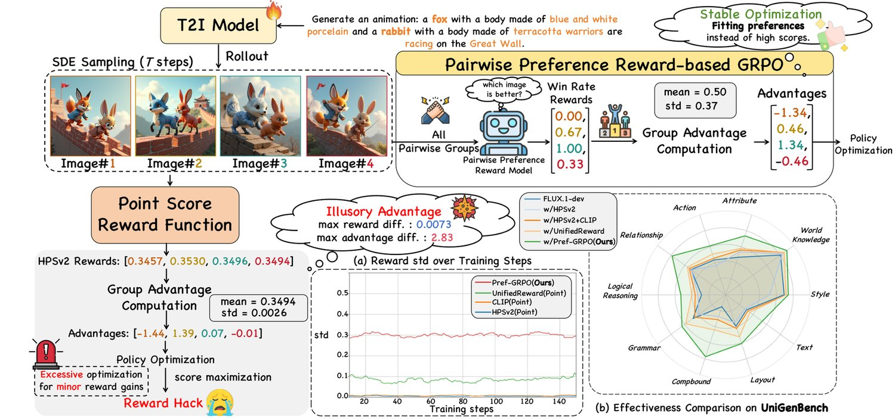
Fig. 1. Pref-GRPO: from illusory advantage to pairwise preference fitting. (a) Pointwise reward models assign tightly clustered scores to images within a group, producing an illusory advantage after normalization and causing reward hacking. (b) Pref-GRPO reformulates the GRPO objective from absolute score maximization to pairwise preference fitting, enabling stable T2I optimization.
图 1. Pref-GRPO：从虚假优势到成对偏好拟合。(a) 逐点奖励模型给同一组内的图像打出高度集中的分数，归一化后产生虚假优势，进而引发奖励破解。(b) Pref-GRPO 把 GRPO 目标从绝对分数最大化重构为成对偏好拟合，从而实现稳定的 T2I 优化。
Recent progress in text-to-image (T2I) generation has made reinforcement learning [1, 2, 3, 4] and comprehensive benchmarking [5, 6, 7] two pivotal pillars for advancing model capabilities and for evaluating them reliably. Specifically, several GRPO-based approaches [1, 3] employ pointwise reward models [8, 9, 10] to score a group of generated images at each training step and normalize these scores into advantages following the GRPO objective [11]. This pipeline has proven highly effective in aligning T2I generation with human preferences.
文本到图像（T2I）生成的最新进展，使强化学习[1, 2, 3, 4] 与综合基准评测[5, 6, 7] 成为提升模型能力与可靠评测的两大支柱。具体地，若干基于 GRPO 的方法[1, 3] 采用逐点奖励模型[8, 9, 10]，在每一步训练中对一组生成图像打分，并按 GRPO 目标[11] 把这些分数归一化为优势。这一流程已被证明在让 T2I 生成与人类偏好对齐方面十分有效。
In parallel, evaluating T2I models, particularly their instruction-following capability, has become increasingly important. Widely adopted benchmarks [6, 5] probe compositional aspects using CLIP [12]-based or detection-based metrics, and TIIF-Bench [7] further incorporates additional dimensions such as text rendering.
与此同时，评测 T2I 模型——尤其是其指令遵循能力——变得日益重要。被广泛采用的基准[6, 5] 用基于 CLIP [12] 或基于检测的指标来考察组合性方面，TIIF-Bench [7] 进一步纳入了文本渲染等更多维度。
Despite these advances, existing approaches still face two key limitations: (1) Existing GRPO-based methods use pointwise reward models to maximize reward scores, which provides early gains but often leads to reward hacking: reward scores keep rising while image quality deteriorates over prolonged training (Fig. 2), a failure mode also noted in prior work [1, 3]. (2) Current T2I benchmarks provide only coarse, primary-dimension-only evaluation, covering a limited range of sub-dimensions without reporting fine-grained sub-dimension scores (Tab. I).
尽管取得上述进展，现有方法仍面临两方面的关键局限：(1) 现有基于 GRPO 的方法用逐点奖励模型最大化奖励分数，这在早期带来收益，却常导致奖励破解：随着训练时间延长，奖励分数持续上升而图像质量不断下降（图 2），这一失效模式在前人工作[1, 3] 中亦有提及。(2) 当前的 T2I 基准只提供粗粒度的、仅覆盖主维度的评测，子维度覆盖面有限，且不上报细粒度的子维度分数（表 I）。
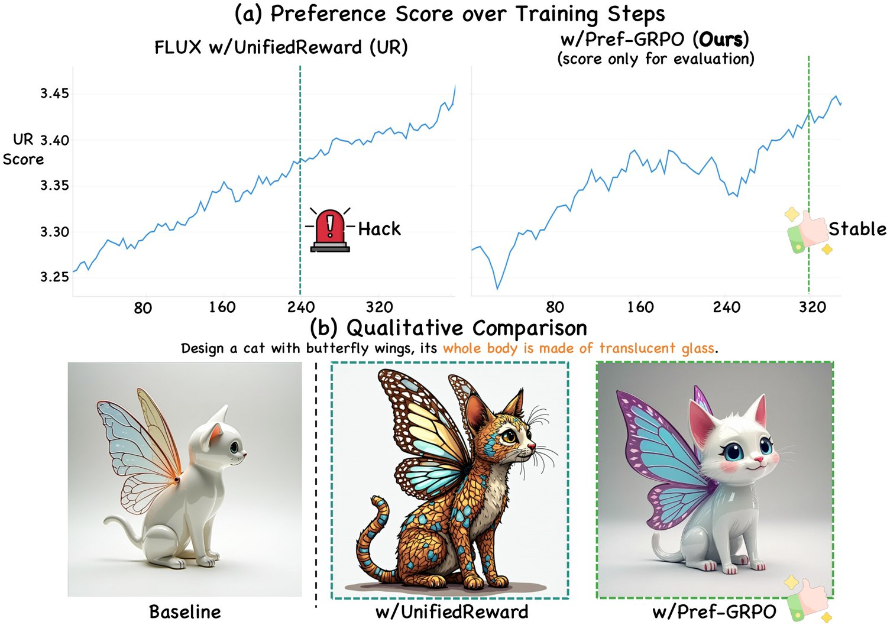
图 2：UnifiedReward 下的奖励破解。(a) 训练过程中 UnifiedReward 分数单调上升。(b) 尽管奖励上升，生成图像逐渐偏向一种不自然的暗色风格，这是明确的奖励破解特征。
In light of these issues, we argue that (1) reward hacking in GRPO-based methods stems from an illusory advantage that arises when pointwise reward models assign tightly clustered scores to images within the same group. Normalizing these scores into advantages disproportionately amplifies small gaps. Under a reward-maximization objective, such inflated advantages drive the policy to over-optimize for trivial reward cues, eventually steering it toward reward-hacking behaviors that rapidly increase scores while destabilizing generation (Figs. Pref-GRPO: Pairwise Preference Reward-based GRPO for Stable Text-to-Image Reinforcement Learning and 2). Moreover, small biases in the reward model are similarly amplified, encouraging the policy to exploit reward-model flaws rather than align with human preferences. (2) Current T2I models already perform well on most primary dimensions (e.g., object attributes and actions), which makes it necessary to decompose these broad dimensions into finer-grained sub-dimensions for more rigorous, diagnostic evaluation.
鉴于上述问题，我们认为：(1) 基于 GRPO 的方法中出现的奖励破解，源于逐点奖励模型给同一组内图像打出高度集中的分数时所产生的虚假优势；把这些分数归一化为优势，会不成比例地放大微小差距。在奖励最大化目标下，这种被放大的优势驱使策略针对无关紧要的奖励线索过度优化，最终滑向奖励破解行为——分数快速上升，生成却愈发不稳定（图 1 与图 2）。此外，奖励模型中的微小偏差同样会被放大，促使策略利用奖励模型的缺陷，而非与人类偏好对齐。(2) 当前的 T2I 模型在多数主维度（如物体属性与动作）上已表现良好，因此有必要把这些宽泛维度分解为更细粒度的子维度，以实现更严格、更具诊断性的评测。
To this end, this work proposes Pref-GRPO, the first pairwise-preference-reward-based GRPO method for stable T2I reinforcement learning, and UniGenBench, a fine-grained T2I evaluation benchmark for semantic consistency.
为此，本文提出 Pref-GRPO——首个面向稳定 T2I 强化学习的、基于成对偏好奖励的 GRPO 方法，以及 UniGenBench——一个面向语义一致性的细粒度 T2I 评测基准。
(1) Pref-GRPO incorporates a Pairwise Preference Reward Model (PPRM) [13], reformulating the GRPO objective from absolute reward score maximization to pairwise preference fitting. As illustrated in Fig. Pref-GRPO: Pairwise Preference Reward-based GRPO for Stable Text-to-Image Reinforcement Learning, at each training step, given a group of generated images, we use the PPRM on each image pair to identify the preferred image. Each image’s win rate (the proportion of pairwise comparisons in which it is preferred) is then used as the reward signal for policy optimization. This design offers three key advantages: (a) Amplified reward variance: driving high-quality images toward win rates near 1 and low-quality ones toward 0 yields more separable reward distributions and more informative advantage estimates. (b) Robustness to reward noise: relying on relative rankings rather than absolute scores reduces over-optimization for marginal score gains and mitigates reward hacking. (c) Alignment with human preference: pairwise comparisons mirror the way humans compare images, producing reward signals that better capture nuanced preferences. Extensive experiments show that Pref-GRPO discerns subtle quality variations, produces more stable and directional advantages than pointwise scoring, and alleviates reward hacking.
(1) Pref-GRPO 引入成对偏好奖励模型（PPRM）[13]，把 GRPO 目标从绝对奖励分数最大化重构为成对偏好拟合。如图 1 所示，每一步训练中，给定一组生成图像，我们用 PPRM 对每一对图像判断其中更受偏好的一幅；每幅图像的胜率（它在两两比较中被偏好的比例）随后被用作策略优化的奖励信号。这一设计带来三点优势：(a) 奖励方差被放大——把高质量图像推向接近 1 的胜率、低质量图像推向接近 0，得到更可分的奖励分布与信息量更大的优势估计。(b) 对奖励噪声更鲁棒——依赖相对排序而非绝对分数，减少了对微小分数增益的过度优化，缓解了奖励破解。(c) 与人类偏好一致——两两比较复现了人类比对图像的方式，使奖励信号更能捕捉细微偏好。大量实验表明，Pref-GRPO 能辨别细微的质量差异，产生比逐点打分更稳定、更具方向性的优势，并缓解奖励破解。
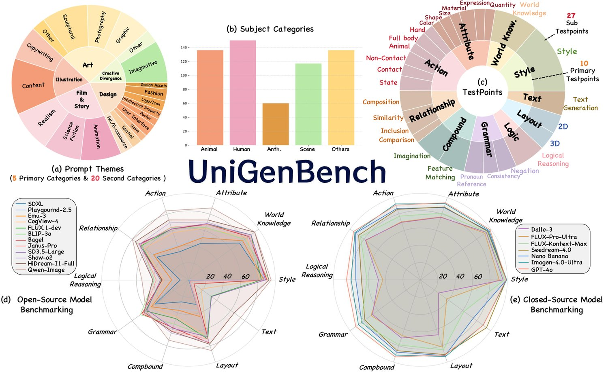
图 3：UniGenBench 概览。(a) 提示词主题：5 个主类别与 20 个子类别。(b) 主体类别。(c) 评测测试点：10 个主维度与 27 个子维度。(d, e) 代表性的开源与闭源 T2I 模型在 UniGenBench 上的基准结果。
表 I：与现有 T2I 基准的比较。我们汇总了各基准在 UniGenBench 各维度上的覆盖情况。现有基准主要上报主维度分数，或只覆盖稀疏的子维度子集，而 UniGenBench 提供 10 个主维度与 27 个子维度，并给出细粒度的逐子维度评测。
| Benchmark | Score Mode | Style | World Know. | Attribute | Action | Relationship | Compound | Grammar | Layout | Logical Reason. | Text | |||||||||||||||||
| — | — | Quant. | Expn. | Material | Size | Shape | Color | Hand | Full Body | Animal | Non Contact | Contact | State | Compo. | Similarity | Inclusion | Comparison | Imagin. | Feature Matching | Pronoun Ref. | Consistency | Negation | 2D | 3D | — | — | ||
| GenEval | ✓ | ✓ | ✓ | ✓ | ||||||||||||||||||||||||
| T2I-Comp | Primary Dimension | ✓ | ✓ | ✓ | ✓ | ✓ | ✓ | ✓ | ✓ | ✓ | ✓ | ✓ | ✓ | |||||||||||||||
| TIIF-Bench | ✓ | ✓ | ✓ | ✓ | ✓ | ✓ | ✓ | ✓ | ✓ | ✓ | ✓ | ✓ | ✓ | ✓ | ✓ | ✓ | ✓ | ✓ | ✓ | |||||||||
| UniGenBench (Ours) | Primary & Sub Dimension | ✓ | ✓ | ✓ | ✓ | ✓ | ✓ | ✓ | ✓ | ✓ | ✓ | ✓ | ✓ | ✓ | ✓ | ✓ | ✓ | ✓ | ✓ | ✓ | ✓ | ✓ | ✓ | ✓ | ✓ | ✓ | ✓ | ✓ |
(2) UniGenBench is built for fine-grained T2I evaluation, covering 10 primary dimensions and 27 sub-dimensions, alongside 5 prompt themes (20 sub-themes) and diverse subject categories (Fig. 3). Unlike existing benchmarks that provide only coarse, primary-dimension-only evaluation, most primary dimensions in UniGenBench are further subdivided into fine-grained sub-dimensions, each associated with explicit testpoints (Tab. I). We further build an automated evaluation pipeline powered by a strong MLLM (Gemini-2.5-Pro [14]) for both benchmark construction and T2I model evaluation, illustrated in Fig. 7. We benchmark popular closed-source models, including GPT-4o [15], Nano Banana, Seedream-4.0 [16], and Imagen-4.0-Ultra [17], as well as leading open-source models such as Qwen-Image [18], HiDream-I1-Full [19], and Bagel [20]. As shown in Fig. 3(d, e), both open- and closed-source models perform relatively well on Style and World Knowledge prompts, but consistently underperform on prompts requiring Logical Reasoning, such as those involving causal or contrastive relationships.
(2) UniGenBench 面向细粒度的 T2I 评测而构建，覆盖 10 个主维度与 27 个子维度，并配有 5 个提示词主题（20 个子主题）和多样的主体类别（图 3）。与只提供粗粒度、仅覆盖主维度评测的现有基准不同，UniGenBench 中的多数主维度被进一步细分为更细粒度的子维度，每个子维度都配有明确的测试点（表 I）。我们还构建了一条由强 MLLM（Gemini-2.5-Pro [14]）驱动的自动化评测流程，同时用于基准构建与 T2I 模型评测，如图 7 所示。我们对主流闭源模型做了基准测试，包括 GPT-4o [15]、Nano Banana、Seedream-4.0 [16] 和 Imagen-4.0-Ultra [17]，以及领先开源模型 Qwen-Image [18]、HiDream-I1-Full [19] 和 Bagel [20]。如图 3(d, e) 所示，开源与闭源模型在 Style 与 World Knowledge 类提示词上表现相对较好，但在需要 Logical Reasoning 的提示词（如涉及因果或对比关系者）上始终表现不佳。
Contributions: (1) We identify a root cause of reward hacking in pointwise-reward GRPO: the illusory advantage induced by within-group score normalization. (2) We propose Pref-GRPO, the first pairwise-preference-reward-based GRPO method for stable T2I reinforcement learning, which reformulates the optimization objective from absolute reward score maximization to pairwise preference fitting. (3) Experiments on UniGenBench, GenEval, and T2I-CompBench show that Pref-GRPO alleviates reward hacking and improves semantic alignment (+5.84% overall on UniGenBench, with +12.69% on Text and +12.04% on Logical Reasoning), without sacrificing perceptual quality. (4) We introduce UniGenBench, a fine-grained T2I benchmark with 10 primary dimensions and 27 sub-dimensions across 5 prompt themes (20 sub-themes), together with an MLLM-based pipeline for benchmark construction and evaluation. (5) We benchmark representative open- and closed-source T2I models on UniGenBench, revealing that Style and World Knowledge are saturated across strong models, while fine-grained compositional capabilities such as Logical Reasoning, Grammar, and Compound remain the primary bottlenecks.
贡献如下：(1) 我们指出逐点奖励 GRPO 中奖励破解的一个根本原因——组内分数归一化所诱发的虚假优势。(2) 我们提出 Pref-GRPO，首个面向稳定 T2I 强化学习的、基于成对偏好奖励的 GRPO 方法，把优化目标从绝对奖励分数最大化重构为成对偏好拟合。(3) 在 UniGenBench、GenEval 与 T2I-CompBench 上的实验表明，Pref-GRPO 缓解了奖励破解并提升语义对齐（UniGenBench 整体 +5.84%，其中 Text 维度 +12.69%、Logical Reasoning 维度 +12.04%），且未牺牲感知质量。(4) 我们提出 UniGenBench，一个含 10 个主维度与 27 个子维度、覆盖 5 个提示词主题（20 个子主题）的细粒度 T2I 基准，并配套基于 MLLM 的构建与评测流程。(5) 我们在 UniGenBench 上对代表性开源与闭源 T2I 模型做了基准测试，发现 Style 与 World Knowledge 在强模型上已趋于饱和，而 Logical Reasoning、Grammar、Compound 等细粒度组合能力仍是主要瓶颈。
Reinforcement Learning for T2I Generation is gaining rapid momentum. Early efforts pursued preference-driven objectives [21, 22, 23]. For example, DiffusionDPO [23], adapted from Direct Preference Optimization (DPO) [24], optimizes preference consistency via a classification-style objective as a simpler alternative to RLHF. DyMO [21] offers a plug-and-play, training-free alignment method that steers generated images toward human preferences at inference. More recently, group relative policy optimization (GRPO) has advanced online RL-enhanced image generation. Flow-GRPO [25] and DanceGRPO [3] instantiate GRPO on flow-matching models, introducing stochasticity by recasting the original deterministic ODE as an equivalent SDE. While effective, these reward score-maximization methods are prone to reward hacking due to illusory advantage. To this end, we propose Pref-GRPO, which shifts training from reward-score maximization to pairwise preference fitting, yielding more stable advantages, and thereby mitigates reward hacking.
面向 T2I 生成的强化学习正迅速兴起。早期工作追求偏好驱动的目标[21, 22, 23]。例如，由直接偏好优化（DPO）[24] 改造而来的 DiffusionDPO [23]，以分类式目标优化偏好一致性，作为 RLHF 的一种更简单替代。DyMO [21] 提供一种即插即用、免训练的对齐方法，在推理阶段把生成图像导向人类偏好。更近期，组相对策略优化（GRPO）推动了在线 RL 增强的图像生成。Flow-GRPO [25] 与 DanceGRPO [3] 在流匹配模型上实例化 GRPO，通过把原确定性 ODE 改写为等价 SDE 引入随机性。这些方法虽然有效，但作为奖励分数最大化方法，因虚假优势而容易出现奖励破解。为此，我们提出 Pref-GRPO，把训练从奖励分数最大化转向成对偏好拟合，得到更稳定的优势，从而缓解奖励破解。
Existing Benchmarks for T2I Evaluation have expanded the evaluation of T2I models beyond simple visual fidelity, incorporating compositional reasoning [5, 6] and world knowledge [26]. Recently, [7] introduces TIIF-Bench, containing 5k prompts spanning multiple dimensions, i.e., text rendering and style control, rigorously evaluating model robustness to variations in prompt length. However, existing benchmarks largely focus on primary dimension–level coarse assessment, covering a limited set of sub-tasks and lacking fine-grained assessment of these sub-tasks. To address this gap, we propose a unified image generation benchmark, UniGenBench, consisting of 600 prompts spanning diverse themes and categories, assessing T2I models across 10 primary dimensions and 27 sub-dimensions.
面向 T2I 评测的现有基准已把 T2I 模型的评测从单纯的视觉保真度扩展开去，纳入了组合推理[5, 6] 与世界知识[26]。近来，[7] 提出 TIIF-Bench，含 5k 条覆盖多个维度（如文本渲染与风格控制）的提示词，严格评测模型对提示词长度变化的鲁棒性。然而现有基准大多停留在主维度层面的粗粒度评估，覆盖的子任务有限，且缺乏对这些子任务的细粒度评估。为填补这一空白，我们提出统一的图像生成基准 UniGenBench，由 600 条覆盖多样主题与类别的提示词构成，从 10 个主维度与 27 个子维度评估 T2I 模型。
Existing GRPO-based text-to-image methods optimize the policy by maximizing pointwise reward scores [1, 3, 2, 4]. This design implicitly assumes that the absolute score assigned by the reward model is both sufficiently discriminative within a rollout group and reliable enough to support gradient scaling. In practice, however, these assumptions are often violated. For visually similar images sampled from the same prompt, pointwise reward models such as HPSv2 [9] and UnifiedReward [8] frequently produce highly compressed scores (see Fig. Pref-GRPO: Pairwise Preference Reward-based GRPO for Stable Text-to-Image Reinforcement Learning). GRPO then normalizes these near-identical scores by a very small group standard deviation, turning negligible score gaps into disproportionately large advantages. The optimization is therefore driven not by substantial quality differences, but by amplified numerical fluctuations, which leads to the illusory advantage phenomenon, as analyzed in Sec. IV-B.
现有基于 GRPO 的文本到图像方法通过最大化逐点奖励分数来优化策略[1, 3, 2, 4]。这一设计隐含假定：奖励模型给出的绝对分数在一次回放组内具有足够区分度，且足够可靠以支持梯度缩放。然而实践中这些假设常被打破。对同一提示词采样出的视觉上相近的图像，HPSv2 [9]、UnifiedReward [8] 等逐点奖励模型常常给出高度压缩的分数（见图 1）。GRPO 随后用一个极小的组内标准差对这些近乎相同的分数做归一化，把微弱的分数差距放大为不成比例的巨大优势。于是优化的驱动力并非实质性的质量差异，而是被放大的数值波动，这就导致了第 IV-B 节所分析的虚假优势现象。
The consequence is not merely optimization instability, but a deeper objective mismatch. Once the training target is defined as absolute reward maximization, the policy is encouraged to chase any reward increase, even when that increase comes from reward-model bias rather than genuine improvement in text-image alignment or visual quality. This helps explain the reward hacking behaviors reported in prior work [1, 3] and observed in our experiments: HPSv2 encourages over-saturated generations (see Fig. 9), while UnifiedReward tends to favor an unnatural dark style (see Fig. 2). Importantly, simply shrinking or clipping the normalized advantage can only dampen the update magnitude; it cannot remove the underlying tendency to optimize toward unreliable absolute-score increments.
其后果不只是优化不稳定，更是更深层的目标错配。一旦训练目标被定义为绝对奖励最大化，策略就会被鼓励追逐任何奖励增量，即便该增量来自奖励模型的偏差，而非图文对齐或视觉质量的真实改善。这也解释了前人工作[1, 3] 所报告、并在我们实验中观察到的奖励破解行为：HPSv2 会鼓励过饱和的生成（见图 9），而 UnifiedReward 倾向于偏爱不自然的暗色风格（见图 2）。重要的是，单纯缩小或截断归一化后的优势只能削弱更新幅度，无法消除朝不可靠的绝对分数增量优化的内在倾向。
These observations motivate replacing reward score maximization with pairwise preference fitting. Relative comparison is fundamentally better suited to this setting for two reasons. First, when candidate images are close in quality, determining which one is better is typically more reliable than assigning well-calibrated absolute scores to each image independently. Second, pairwise comparison discards uninformative score magnitude and focuses optimization on stable ordering information, making the reward signal less sensitive to small fluctuations and common calibration bias. This change also better matches human evaluation, which is usually comparative rather than absolute for similar generations. Motivated by this, we reformulate traditional GRPO with pairwise preference rewards and pairwise win rates, as detailed next.
这些观察促使我们用成对偏好拟合取代奖励分数最大化。相对比较本质上更契合这一场景，原因有二。其一，当候选图像质量接近时，判断哪一幅更好，通常比为每幅图像独立给出校准良好的绝对分数更可靠。其二，两两比较丢弃了无信息量的分数幅值，把优化聚焦在稳定的排序信息上，使奖励信号对小幅波动和常见的校准偏差不再敏感。这一改动也更贴合人类评估——对相近的生成结果，人类判断通常是比较式的而非绝对式的。受此启发，我们用成对偏好奖励与成对胜率重构了传统 GRPO，详见下文。
This section presents the technical formulation of Pref-GRPO. We first introduce GRPO on flow matching models in Sec. IV-A, then analyze the illusory advantage phenomenon in Sec. IV-B, and finally describe our Pref-GRPO objective in Sec. IV-C.
本节给出 Pref-GRPO 的技术表述。我们先在第 IV-A 节介绍流匹配模型上的 GRPO，再在第 IV-B 节分析虚假优势现象，最后在第 IV-C 节描述 Pref-GRPO 的目标。
Let be a data sample and a noise sample. Rectified flow [27] defines intermediate samples as
令 为一个数据样本、 为一个噪声样本。整流流[27] 把中间样本定义为
| (1) |
and trains a velocity field via the flow matching [28] objective:
并通过流匹配[28] 目标训练速度场 ：
| (2) |
Beyond training, the iterative denoising process at inference time can be naturally formalized as a Markov Decision Process [29]. We discretize into steps. At each step, the state is , where denotes the prompt. The action corresponds to producing the denoised sample , yielding a deterministic transition to . The initial state samples a prompt with and . A reward is only provided at the terminal state (): , and zero otherwise.
除训练外，推理时的迭代去噪过程可以自然地形式化为一个马尔可夫决策过程[29]。我们把 离散为 步。每一步的状态为 ，其中 表示提示词。动作 对应产生去噪后的样本 ，从而确定性地转移到 。初始状态采样提示词 ，并取 与 。奖励只在终止状态（）给出：，其余时刻为零。
GRPO [11] introduces a group-relative advantage to stabilize policy updates. On flow matching models, for a group of generated images , the advantage of the -th image is
GRPO [11] 引入组相对优势以稳定策略更新。在流匹配模型上，对一组 幅生成图像 ，第 幅图像的优势为
| (3) |
The policy is updated by maximizing the clipped, KL-regularized objective
策略通过最大化带截断、KL 正则化的目标来更新
| (4) |
where
其中
| (5) | |||
with .
其中 。
To enable the stochastic exploration required by GRPO, Flow-GRPO [1] converts the deterministic flow ODE to an equivalent SDE:
为实现 GRPO 所需的随机探索，Flow-GRPO [1] 把确定性流 ODE 转换为等价的 SDE：
| (6) |
where is a standard Wiener process and is a time-dependent noise scale. Euler-Maruyama discretization gives the update rule:
其中 为标准维纳过程， 为随时间变化的噪声尺度。Euler-Maruyama 离散化给出如下更新规则：
| (7) | |||
where and is a scalar hyperparameter.
其中 ，而 是一个标量超参数。
Existing flow-matching-based GRPO methods [1, 3, 2, 4] use pointwise reward models [8, 12, 9] to score a group of generated images at each update step. The advantage of each image is then obtained by normalizing its reward within the group, as in Eq. 3. This normalization is intended to standardize updates across samples. In practice, however, pointwise reward models often assign tightly clustered scores to visually similar images from the same prompt, yielding a small within-group standard deviation . As a consequence, even minor score gaps are disproportionately magnified after normalization (see Fig. Pref-GRPO: Pairwise Preference Reward-based GRPO for Stable Text-to-Image Reinforcement Learning(a)).
现有基于流匹配的 GRPO 方法[1, 3, 2, 4] 在每一步更新时用逐点奖励模型[8, 12, 9] 对一组生成图像打分。每幅图像的优势随后由其在组内的奖励归一化得到，如式 3。该归一化意在使不同样本间的更新具有统一尺度。然而实践中，逐点奖励模型常给同一提示词下视觉相近的图像打出高度集中的分数 ，导致组内标准差 很小。结果是，即便极小的分数差距也会在归一化后被不成比例地放大（见图 1(a)）。
To make this effect explicit, let and denote the mean and standard deviation of the group’s rewards. Define the centered reward of sample as . The normalized advantage then becomes:
为使该效应更明确，令 与 分别表示组内奖励的均值与标准差。定义样本 的中心化奖励为 。归一化后的优势于是变为：
| (8) |
For clarity, we drop the clip and KL terms and isolate the effect of reward normalization. The gradient of the GRPO objective with respect to is then:
为清晰起见，我们略去截断项与 KL 项，单独考察奖励归一化的作用。GRPO 目标对 的梯度为：
| (9) |
Substituting and treating as a per-group constant, we obtain:
代入 ，并把 视作逐组常数，可得：
| (10) |
The gradient norm therefore contains an explicit factor of :
因此梯度范数中含有显式的 因子：
| (11) |
Therefore, when a pointwise reward model assigns nearly identical scores to images within the same group (i.e., ), the normalization becomes highly sensitive to small perturbations. Even when is small, dividing by a small produces disproportionately large normalized advantages , making the update direction overly dependent on noisy reward differences.
于是，当逐点奖励模型给同组内的图像打出几乎相同的分数（即 ）时，归一化会对微小扰动高度敏感。即便 很小，除以一个很小的 也会产生不成比例的巨大归一化优势 ，使更新方向过度依赖带噪声的奖励差异。
This amplification causes the model to over-optimize for spurious reward differences, manifesting as reward hacking. We term this failure mode the illusory advantage phenomenon. The illusory advantage has two detrimental effects. (1) Excessive optimization: minimal score variations are exaggerated, pushing the policy toward extreme, reward-hacked behaviors (Figs. 2 and 9). (2) Sensitivity to reward noise: the optimization becomes highly susceptible to biases in the reward model, encouraging the policy to exploit model flaws rather than pursue genuine quality improvements.
这种放大会使模型针对虚假的奖励差异过度优化，表现为奖励破解。我们把这一失效模式称为虚假优势现象。虚假优势有两方面危害：(1) 过度优化——极小的分数差异被放大，把策略推向极端的、被奖励破解的行为（图 2 与图 9）；(2) 对奖励噪声敏感——优化变得极易受奖励模型偏差影响，鼓励策略利用模型缺陷，而非追求真实的质量提升。
To mitigate the illusory advantage, we propose Pref-GRPO, which uses a Pairwise Preference Reward Model (PPRM) [13] to reformulate the optimization objective as pairwise preference fitting. Instead of relying on absolute reward scores, Pref-GRPO evaluates relative preferences among generated images, mirroring the way humans compare images pairwise. This yields a reward signal that better captures nuanced differences in image quality and prompt alignment, producing more stable and informative advantages for policy optimization while reducing susceptibility to reward hacking. Specifically, given a set of images sampled from for prompt , for each ordered pair with we use the PPRM to determine whether image is preferred over image . The win rate of image is defined as
为缓解虚假优势，我们提出 Pref-GRPO，它用成对偏好奖励模型（PPRM）[13] 把优化目标重构为成对偏好拟合。Pref-GRPO 不依赖绝对奖励分数，而是评估生成图像之间的相对偏好，复现人类两两比对图像的方式。这得到的奖励信号能更好地捕捉图像质量与提示词对齐上的细微差异，为策略优化提供更稳定、信息量更大的优势，同时降低受奖励破解影响的可能。具体地，给定 幅图像 ，它们从 采样得到，对应提示词 ；对每个有序对 （），我们用 PPRM 判断图像 是否比图像 更受偏好。图像 的胜率定义为
| (12) |
where is the indicator function, and indicates that image is preferred over image according to the PPRM. The win rates are then used as rewards, replacing the scalar rewards in the GRPO advantage:
其中 为指示函数， 表示按 PPRM 的判定，图像 比图像 更受偏好。这些胜率随后被用作奖励，取代 GRPO 优势中的标量奖励 ：
| (13) |
Compared to reward score maximization, Pref-GRPO offers several advantages: (1) Amplified reward variance: replacing scalar rewards with pairwise win rates spreads win rates across , yielding a larger within-group variance. High-quality samples approach , and lower-quality samples approach , producing a more discriminative and robust reward distribution for advantage estimation, thereby mitigating reward hacking. (2) Robustness to reward noise: because optimization relies on relative rankings rather than raw scores, Pref-GRPO reduces sensitivity to small fluctuations and biases in the reward model, lowering the likelihood of reward hacking and improving training stability. (3) Alignment with human preference: human preference judgments over images are inherently relative rather than absolute. Mirroring this process lets Pref-GRPO capture fine-grained quality distinctions often missed by pointwise scoring, providing a more faithful signal for policy improvement.
与奖励分数最大化相比，Pref-GRPO 有几方面优势：(1) 奖励方差被放大——用成对胜率取代标量奖励，使胜率散布在 之上，得到更大的组内方差；高质量样本趋近 ，低质量样本趋近 ，为优势估计提供更可判别、更鲁棒的奖励分布，从而缓解奖励破解。(2) 对奖励噪声更鲁棒——由于优化依赖相对排序而非原始分数，Pref-GRPO 降低了对奖励模型小幅波动与偏差的敏感度，减小了奖励破解的可能并提升训练稳定性。(3) 与人类偏好一致——人类对图像的偏好判断天然是相对的而非绝对的。复现这一过程使 Pref-GRPO 能捕捉逐点打分常漏掉的细粒度质量差异，为策略改进提供更忠实的信号。
Rigorous evaluation is equally important for discerning whether a T2I model faithfully follows complex semantics. This requires a benchmark that goes beyond coarse aggregate scores and probes fine-grained semantic capabilities. However, existing benchmarks [5, 6, 7] still exhibit the following limitations: (1) Sparse sub-dimension coverage: existing benchmarks typically include only a few sub-dimensions within each primary dimension, missing many practical capabilities. For example, as shown in Tab. I, current benchmarks include only a single sub-dimension for Relationship and Grammar, leading to incomplete and potentially misleading assessments in these aspects. (2) No sub-dimension-level reporting: existing benchmarks report scores only at the primary-dimension level, without breaking down performance across sub-dimensions. This coarse reporting limits interpretability and prevents diagnosing a T2I model’s strengths and weaknesses.
严格评测对于判断一个 T2I 模型是否忠实遵循复杂语义同样重要。这需要一种超越粗粒度聚合分数、能够探查细粒度语义能力的基准。然而现有基准[5, 6, 7] 仍存在以下局限：(1) 子维度覆盖稀疏——现有基准在每个主维度下通常只包含少数几个子维度，遗漏了许多实用能力。例如，如表 I 所示，现有基准对 Relationship 与 Grammar 各只含一个子维度，导致这两方面的评估不完整、甚至可能产生误导。(2) 不上报子维度级分数——现有基准只在主维度层级上报分数，不按子维度拆分性能。这种粗粒度上报限制了可解释性，也无法诊断 T2I 模型的长处与短板。
Motivated by this gap, we propose UniGenBench, a T2I evaluation benchmark designed not only to compare models, but also to reveal where their semantic understanding actually breaks down. UniGenBench offers the following advantages:
受这一空白驱动，我们提出 UniGenBench——一个 T2I 评测基准，其目的不仅在于比较模型，更在于揭示模型的语义理解究竟在哪里失效。UniGenBench 具有如下优势：
Comprehensive fine-grained evaluation: 10 primary dimensions and 27 sub-dimensions, enabling substantially finer-grained diagnosis than benchmarks that report only coarse dimension-level scores.
• 全面的细粒度评测：10 个主维度与 27 个子维度，相比只上报粗粒度维度级分数的基准，能实现更细粒度的诊断。
Broad prompt coverage: 5 major prompt themes and 20 sub-themes, spanning scenarios from realistic rendering to open-ended creative composition.
• 广泛的提示词覆盖：5 个主要提示词主题与 20 个子主题，场景横跨从真实感渲染到开放式创意构图。
Efficient benchmark design: 600 prompts, each with 1 to 5 explicit testpoints, achieving broad semantic coverage without the thousands of prompts used by prior benchmarks.
• 高效的基准设计：600 条提示词，每条配 1 到 5 个明确测试点，无需像此前基准那样动用数千条提示词即可获得广泛的语义覆盖。
Reliable MLLM-based assessment: each prompt is paired with structured testpoint descriptions, enabling precise, interpretable per-testpoint assessment of whether the intended semantic targets are satisfied.
• 可靠的 MLLM 评估：每条提示词配结构化的测试点描述，从而对预期语义目标是否满足作出精确、可解释的逐测试点评估。
We will first introduce our design of prompt themes and evaluation criteria in the benchmark (Sec. V-A), and then elaborate on our MLLM-based automated pipeline for prompt generation and T2I evaluation (Sec. V-B).
我们先在第 V-A 节介绍基准中提示词主题与评测维度的设计，再在第 V-B 节详述我们基于 MLLM 的提示词生成与 T2I 评测自动化流程。
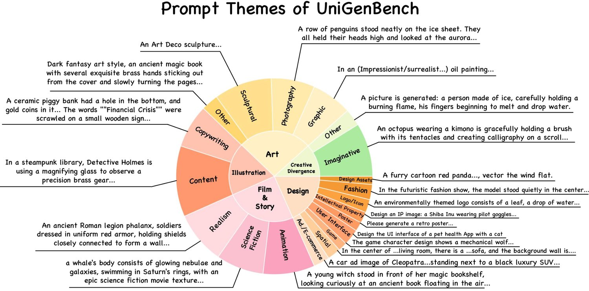
图 4：UniGenBench 的提示词主题。5 个主主题与 20 个子主题各自的代表性示例。
As shown in Fig. 3, UniGenBench covers five major prompt themes: Art, Illustration, Creative Divergence, Design, and Film&Storytelling, further divided into 20 subcategories. It also spans diverse subject categories including animals, objects, anthropomorphic characters, scenes, and an Other category for special entities (e.g., robots in science-fiction themes). This design ensures the benchmark spans both practical generation scenarios and open-ended creative settings, rather than skewing toward a narrow prompt distribution. Representative examples of the prompt themes are shown in Fig. 4.
如图 3 所示，UniGenBench 覆盖五个主要提示词主题：Art、Illustration、Creative Divergence、Design 与 Film&Storytelling，并进一步细分为 20 个子类别。它还涵盖多样的主体类别，包括动物、物体、拟人角色、场景，以及一个用于特殊实体（如科幻主题中的机器人）的 Other 类别。这一设计保证基准同时覆盖实用生成场景与开放式创意场景，而非偏向狭窄的提示词分布。提示词的代表性示例见图 4。
Unlike coarse benchmarks that only report a few high-level metrics, UniGenBench defines 10 primary evaluation dimensions and 27 sub-dimensions. As illustrated in Fig. 5, we explicitly include several challenging yet practically important capabilities that are often overlooked, such as logical reasoning, facial expressions, pronoun reference, hand actions, and fine-grained relationship understanding (e.g., composition, similarity, and inclusion relations), as well as grammatical consistency across multiple entities. This finer decomposition enables the benchmark to diagnose a model’s strengths and weaknesses more precisely, providing substantially richer feedback than dimension-level averages alone.
与只上报少数高层指标的粗粒度基准不同，UniGenBench 定义了 10 个主评测维度与 27 个子维度。如图 5 所示，我们明确纳入了若干常被忽视、却具有实际重要性的挑战性能力，如逻辑推理、面部表情、代词指代、手部动作以及细粒度的关系理解（如构成、相似与包含关系），还有跨多个实体的语法一致性。更细的分解使基准能更精确地诊断模型的长处与短板，提供比维度级平均值丰富得多的反馈。
At a high level, these ten dimensions cover complementary aspects of semantic faithfulness: Style evaluates adherence to the requested visual form; World Knowledge evaluates consistency with commonsense and real-world facts; Attribute evaluates whether entities exhibit the correct properties; Action evaluates whether entities perform the intended behaviors; Relationship evaluates whether inter-entity relations are grounded correctly; Layout evaluates whether spatial arrangements are rendered accurately; Compound evaluates whether multiple concepts are integrated coherently; Grammar evaluates language-sensitive grounding such as reference, consistency, and negation; Logical Reasoning evaluates causal, contrastive, and inferential understanding; and Text evaluates whether explicit textual content is generated correctly.
在高层面上，这十个维度覆盖了语义忠实性的互补方面：Style 评估对指定视觉形式的遵循程度；World Knowledge 评估与常识和现实世界事实的一致性；Attribute 评估实体是否表现出正确的属性；Action 评估实体是否执行了预期的行为；Relationship 评估实体间关系是否被正确落实；Layout 评估空间排布是否被准确呈现；Compound 评估多个概念是否被连贯地整合；Grammar 评估指称、一致性与否定等依赖语言的落地能力；Logical Reasoning 评估因果、对比与推理性理解；Text 评估明确的文字内容是否被正确生成。
To make these dimensions operational, we further instantiate them with explicit sub-dimension testpoints. Specifically, Attribute is decomposed into quantity, expression, material, size, shape, and color; Action is decomposed into hand actions, full-body motions, animal behaviors, contact interactions, non-contact interactions, and object states; Relationship is decomposed into composition, similarity, inclusion, and comparison; and Layout is decomposed into 2D placement and 3D spatial arrangement. This design allows UniGenBench to reveal which aspect of semantic generation actually fails, rather than only reporting a coarse dimension-level average.
为使这些维度可操作，我们进一步用明确的子维度测试点将它们实例化。具体地，Attribute 被分解为数量、表情、材质、尺寸、形状与颜色；Action 被分解为手部动作、全身动作、动物行为、接触式交互、非接触式交互与物体状态；Relationship 被分解为构成、相似、包含与比较；Layout 被分解为二维放置与三维空间排布。这一设计使 UniGenBench 能揭示语义生成究竟在哪一环节失败，而不只是上报一个粗粒度的维度级均值。
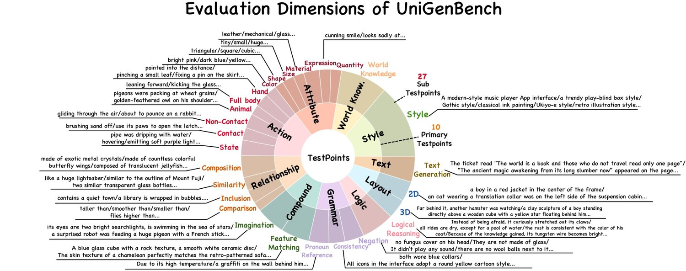
图 5：UniGenBench 的评测维度。10 个主评测维度下 27 个子维度各自的代表性提示词示例。
We further control the complexity of each prompt through the number of associated testpoints. Instead of relying on thousands of prompts with diffuse evaluation targets, UniGenBench uses 600 prompts, each focusing on 1 to 5 specific testpoints. As shown in Fig. 6, this design achieves a practical balance between coverage and efficiency: each prompt remains interpretable and evaluation-friendly, while the benchmark as a whole still spans a broad set of semantic capabilities.
我们还通过每条提示词所关联测试点的数量来控制其复杂度。UniGenBench 没有采用数千条评测目标散乱的提示词，而是使用 600 条提示词，每条聚焦 1 到 5 个具体测试点。如图 6 所示，这一设计在覆盖度与效率之间取得了务实的平衡：每条提示词都保持可解释、便于评测，而基准整体仍覆盖广泛的语义能力。
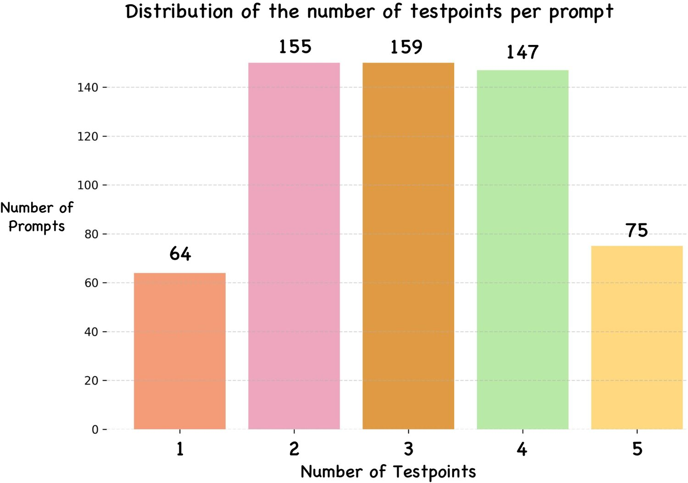
图 6：UniGenBench 中每条提示词测试点数量的分布。每条提示词关联 1 到 5 个测试点，在覆盖度与评测可解释性之间取得平衡。
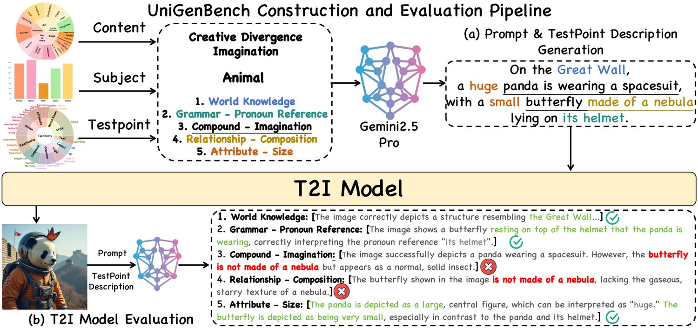
图 7：UniGenBench 的构建与评测流程。用 MLLM（Gemini-2.5-Pro）完成（a）提示词与测试点描述的生成，以及（b）细粒度的逐测试点评测。
Having established diverse prompt themes, subject categories, and evaluation dimensions, we further construct an MLLM-based automated pipeline to operationalize the benchmark shown in Fig. 7. This pipeline serves two complementary purposes: (1) generating large-scale, diverse, and high-quality prompts in a systematic and controllable manner (Sec. V-B1), and (2) enabling scalable, reliable, and fine-grained evaluation of T2I models (Sec. V-B2). By leveraging the reasoning and perception capabilities of MLLMs, the pipeline eliminates the need for costly human annotation, while ensuring both efficiency and reliability in benchmark construction and model assessment.
在确立了多样的提示词主题、主体类别与评测维度之后，我们进一步构建了一条基于 MLLM 的自动化流程来落地该基准，如图 7 所示。该流程服务于两个互补目的：(1) 以系统、可控的方式生成大规模、多样且高质量的提示词（第 V-B1 节）；(2) 实现对 T2I 模型可扩展、可靠且细粒度的评测（第 V-B2 节）。借助 MLLM 的推理与感知能力，该流程免去了昂贵的人工标注，同时保证了基准构建与模型评估的效率与可靠性。
Let denote the set of prompt themes, the set of subject categories, and the set of evaluation dimensions. For each prompt, we sample a theme and a subject category uniformly at random. Subsequently, a subset of testpoints , with , is sampled to target specific fine-grained evaluation aspects.
令 表示提示词主题集合， 表示主体类别集合， 表示评测维度集合。对每条提示词，我们均匀随机采样一个主题 与一个主体类别 。随后采样一个含 个测试点的子集 （其中 ），以针对特定的细粒度评测方面。
The selected tuple is input into the MLLM, which generates two outputs: (i) a natural language prompt that conforms to the semantic constraints of the selected theme and subject category , and (ii) a structured description set , where each specifies how the corresponding testpoint is realized in the prompt. Formally, this process can be expressed as:
选定的元组 被输入 MLLM，由其生成两项输出：(i) 一条自然语言提示词 ，符合所选主题 与主体类别 的语义约束；(ii) 一个结构化描述集合 ，其中每个 说明对应测试点 在该提示词中如何实现。形式化地，该过程可表示为：
| (14) |
Given the generated images for benchmark prompts , we evaluate each image using an MLLM. Specifically, the image , its corresponding prompt , and its testpoint descriptions are provided as input. The MLLM evaluates each testpoint in the context of , producing a binary score and a textual rationale justifying the assessment. This can be formally represented as:
给定生成图像 与对应的基准提示词 ，我们用 MLLM 对每幅图像作评测。具体地，把图像 、其对应提示词 及其测试点描述 作为输入。MLLM 评估每个测试点 （在 的语境下），给出二值分数 与说明该判断的文本理由 。该过程可形式化表示为：
| (15) | |||
This process ensures that the evaluation captures both the quantitative performance on each testpoint and the qualitative reasoning behind the assessment.
这一过程保证评测既捕捉每个测试点上的量化表现，也捕捉判断背后的定性推理。
After obtaining the scores for each testpoint in all generated images, we aggregate them to compute scores of sub- and primary evaluation dimensions. Specifically, for each sub-dimension , we define its score as the ratio of the number of times the model successfully satisfies the corresponding testpoint description to the total number of occurrences of that testpoint across the benchmark:
在得到分数 ——即全部生成图像中每个测试点 的得分——之后，我们对其聚合，计算出子维度与主评测维度的分数。具体地，对每个子维度 ，我们把其分数定义为模型成功满足相应测试点描述的次数，与该测试点在整个基准中出现总次数之比：
| (16) |
where is the indicator function. The overall score for a primary dimension is then obtained by averaging the scores of all its sub-dimensions. This procedure ensures that both fine-grained performance on sub-dimensions and broader performance on primary dimensions are captured.
其中 为指示函数。主维度 的整体分数随后由其全部子维度分数平均得到。这一流程保证既捕捉子维度上的细粒度表现，也捕捉主维度上的整体表现。
Baselines. We use FLUX.1-dev [30] as the base T2I model and UnifiedReward-Think [13] as the pairwise preference reward model (PPRM) in Pref-GRPO. As reward-maximization baselines, we train FLUX.1-dev with Flow-GRPO [1] using each of HPSv2 [9], CLIP [12], and UnifiedReward (UR) [8] as the pointwise reward.
基线。我们以 FLUX.1-dev [30] 作为基础 T2I 模型，以 UnifiedReward-Think [13] 作为 Pref-GRPO 中的成对偏好奖励模型（PPRM）。作为奖励最大化基线，我们用 Flow-GRPO [1] 训练 FLUX.1-dev，分别以 HPSv2 [9]、CLIP [12] 与 UnifiedReward（UR）[8] 作为逐点奖励。
Training. Using the pipeline in Fig. 7(a), we generate 5k training prompts, disjoint from the 600 UniGenBench evaluation prompts. The same 5k prompts are used to train Pref-GRPO and all reward-maximization baselines. Training is conducted on 64 H20 GPUs with 25 sampling steps, 8 rollouts per prompt from the same initial noise , 4 gradient accumulation steps, and a learning rate of . Following Flow-GRPO [1], the SDE noise-scale hyperparameter is set to . We host the PPRM as an inference server using vLLM [31].
训练。使用图 7(a) 的流程，我们生成 5k 条训练提示词，与 UniGenBench 的 600 条评测提示词互不重叠。Pref-GRPO 与所有奖励最大化基线共用这 5k 条提示词。训练在 64 张 H20 GPU 上进行，采样步数 25，每个提示词从同一初始噪声 出发做 8 次回放，梯度累积步数为 4，学习率为 。沿用 Flow-GRPO [1]，SDE 噪声尺度超参数设为 。我们用 vLLM [31] 把 PPRM 部署为推理服务。
Inference. At inference, we generate images with 30 sampling steps and a classifier-free guidance scale of 3.5, following the official FLUX.1-dev configuration. To ensure a fair comparison, all methods share identical prompts and initial noise at evaluation.
推理。推理时，我们按官方 FLUX.1-dev 配置，用 30 步采样、无分类器引导尺度 3.5 生成 幅图像。为保证公平比较，所有方法在评测时使用相同的提示词与初始噪声。
Evaluation. We evaluate semantic consistency on UniGenBench, GenEval [5], and T2I-CompBench [6]. For each test prompt, we generate four images and report the average score. Image quality is further evaluated with UnifiedReward [8], ImageReward [32], PickScore [10], and Aesthetic [33]. ImageReward, PickScore, and Aesthetic are disjoint from the training rewards and serve as the independent quality metrics.
评测。我们在 UniGenBench、GenEval [5] 与 T2I-CompBench [6] 上评测语义一致性。对每条测试提示词生成四幅图像并上报平均分。图像质量进一步用 UnifiedReward [8]、ImageReward [32]、PickScore [10] 与 Aesthetic [33] 评测。ImageReward、PickScore 与 Aesthetic 与训练所用奖励互不重叠，充当独立的质量指标。
Quantitative Results. Tab. II shows that Pref-GRPO delivers clear semantic gains on UniGenBench. Relative to the strongest score-maximization baseline (UR), it improves the overall score by 5.84%, with especially large gains on challenging dimensions such as Text (+12.69%) and Logical Reasoning (+12.04%). This pattern is consistent with our motivation in Sec. IV-B: pairwise preferences provide a cleaner gradient signal than pointwise scores on dimensions that require fine-grained semantic grounding and compositional understanding.
定量结果。表 II 显示，Pref-GRPO 在 UniGenBench 上带来明确的语义增益。相对最强的分数最大化基线（UR），它把整体分数提升 5.84%，在 Text（+12.69%）与 Logical Reasoning（+12.04%）等高难度维度上增益尤为显著。这一规律与第 IV-B 节的动机一致：在需要细粒度语义落地与组合理解的维度上，成对偏好比逐点分数提供了更干净的梯度信号。
The gains also generalize beyond our held-out evaluation on UniGenBench. As shown in Tabs. VI and IV, Pref-GRPO consistently outperforms reward-maximization baselines on both GenEval and T2I-CompBench, indicating improved out-of-domain compositional reasoning, attribute binding, and spatial understanding. Moreover, Tab. III shows that these semantic gains do not come at the expense of perceptual quality: Pref-GRPO achieves the best score on all four image-quality metrics. Overall, pairwise preference fitting improves semantic alignment without sacrificing image quality.
这些增益并不局限于 UniGenBench 上的留出评测。如表 VI 与表 IV 所示，Pref-GRPO 在 GenEval 与 T2I-CompBench 上同样持续优于奖励最大化基线，表明其域外组合推理、属性绑定与空间理解能力均有提升。此外，表 III 显示这些语义增益并非以牺牲感知质量为代价：Pref-GRPO 在四项图像质量指标上均取得最佳分数。总的来看，成对偏好拟合在提升语义对齐的同时并未损害图像质量。
表 II：UniGenBench 上的域内语义一致性比较。用不同奖励模型经 Flow-GRPO 微调的 FLUX.1-dev 与本文 Pref-GRPO 对比。评测器为 Gemini-2.5-Pro。最佳分数加粗，次优加下划线。
| Model | Overall | Style | World Know. | Attr. | Action | Rel. | Logic Reason. | Grammar | Compound | Layout | Text |
| FLUX.1-dev | 61.30 | 83.90 | 88.92 | 67.84 | 62.17 | 67.26 | 30.91 | 60.96 | 47.04 | 71.83 | 32.18 |
| w/ HPSv2 | 58.77 | 75.20 | 88.77 | 66.56 | 58.94 | 66.88 | 28.18 | 58.02 | 45.88 | 67.91 | 31.32 |
| w/ HPSv2&CLIP | 61.81 | 84.92 | 88.98 | 68.44 | 62.54 | 68.10 | 31.01 | 59.36 | 50.60 | 71.07 | 33.07 |
| w/ UnifiedReward | 63.62 | 86.10 | 89.72 | 71.55 | 63.69 | 70.42 | 32.05 | 62.43 | 52.32 | 73.51 | 34.44 |
| w/ Pref-GRPO | 69.46 | 88.40 | 90.35 | 75.00 | 69.77 | 76.52 | 44.09 | 63.27 | 62.43 | 77.61 | 47.13 |
Qualitative Results. Examples are shown in Fig. 8. Existing methods exhibit varying degrees of reward hacking: HPSv2-optimized images tend to be oversaturated, while UR-optimized images drift toward an unnaturally dark style. We also explore mitigating reward hacking by combining multiple reward scores, i.e., summing HPSv2 and CLIP scores during training (third row in Fig. 8). While this partially reduces reward hacking, it does not eliminate it. In contrast, Pref-GRPO avoids these artifacts and faithfully renders the prompt semantics.
定性结果。示例见图 8。现有方法表现出不同程度的奖励破解：HPSv2 优化的图像趋于过饱和，而 UR 优化的图像偏向不自然的暗色风格。我们也探索了通过组合多个奖励分数来缓解奖励破解，即在训练中对 HPSv2 与 CLIP 分数求和（图 8 第三行）。这在一定程度上减轻了奖励破解，但并未根除。相比之下，Pref-GRPO 避免了这些伪影，并忠实呈现提示词语义。
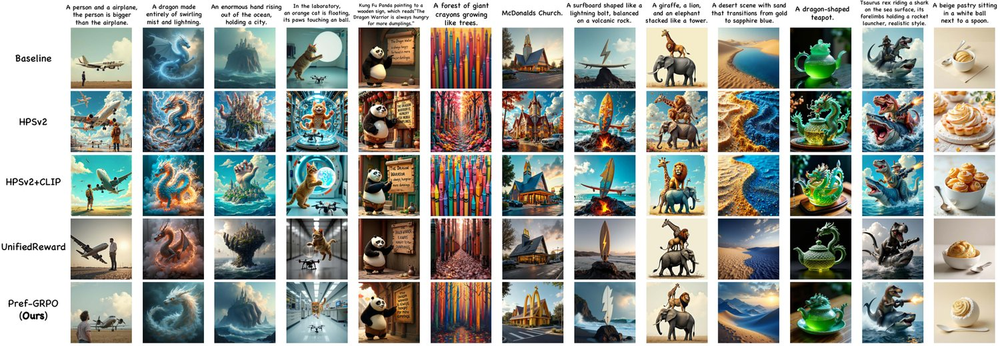
图 8：定性比较。各行分别为用 HPSv2、HPSv2+CLIP、UnifiedReward 与 Pref-GRPO 训练的 FLUX.1-dev。逐点奖励基线呈现出被奖励破解的伪影（HPSv2 为过饱和，UnifiedReward 为暗色风格），而 Pref-GRPO 保持了语义忠实性与 FLUX.1-dev 原有的视觉风格。
A detailed analysis of reward hacking under UnifiedReward and HPSv2 is provided in Sec. VII-A.
关于 UnifiedReward 与 HPSv2 下奖励破解的详细分析见第 VII-A 节。
表 III：图像质量比较。用不同奖励模型经 Flow-GRPO 微调的 FLUX.1-dev 与本文 Pref-GRPO 对比。ImageReward、PickScore 与 Aesthetic 未被用作训练奖励，充当独立的质量指标。最佳结果加粗，次优加下划线。
| Model | Unified Reward | Pick Score | Image Reward | Aes. |
| FLUX.1-dev | 3.04 | 22.42 | 1.27 | 6.13 |
| w/ HPSv2 | 3.09 | 22.62 | 1.34 | 6.20 |
| w/ HPSv2+CLIP | 3.08 | 22.61 | 1.30 | 6.25 |
| w/ UnifiedReward | 3.14 | 22.88 | 1.38 | 6.31 |
| w/ Pref-GRPO | 3.26 | 23.02 | 1.44 | 6.52 |
表 IV：T2I-CompBench 上的域外性能比较。用不同奖励模型经 Flow-GRPO 微调的 FLUX.1-dev 与本文 Pref-GRPO 对比。最佳结果加粗，次优加下划线。
| Model | Overall | Color | Shape | Texture | 2D Spatial | 3D Spatial | Numeracy | Non- Spatial | Complex |
| FLUX.1-dev | 48.17 | 77.34 | 48.32 | 62.66 | 28.01 | 40.04 | 61.88 | 30.67 | 36.49 |
| w/ HPSv2 | 46.77 | 78.17 | 51.55 | 66.13 | 22.06 | 33.75 | 56.34 | 30.20 | 35.96 |
| w/ HPSv2+CLIP | 49.18 | 78.44 | 53.22 | 64.24 | 26.90 | 40.83 | 61.58 | 30.56 | 37.69 |
| w/ UnifiedReward | 50.20 | 78.32 | 55.13 | 67.44 | 28.91 | 40.04 | 62.47 | 30.88 | 38.39 |
| w/ Pref-GRPO | 51.85 | 80.27 | 56.01 | 69.12 | 28.93 | 43.95 | 65.92 | 31.05 | 39.58 |
We further benchmark representative closed-source and open-source T2I models on UniGenBench, spanning diffusion, MMDiT, autoregressive, and unified architectures. Closed-source models are accessed via their official APIs, and open-source models via their released checkpoints, both using the providers’ default inference settings.
我们进一步在 UniGenBench 上对代表性的闭源与开源 T2I 模型做基准测试，覆盖扩散、MMDiT、自回归与统一式等多种结构。闭源模型通过官方 API 访问，开源模型通过已发布的检查点访问，两者均使用提供方默认的推理设置。
Closed-source Models. We benchmark GPT-4o [15] (OpenAI), Imagen-4.0-Ultra [17] (Google), Seedream-3.0 and Seedream-4.0 [16] (ByteDance), Nano Banana (Google), DALL-E-3 (OpenAI), FLUX-Pro-Ultra and Kontext-Max [30] (Black Forest Labs), and Keling-Ketu (Kuaishou).
闭源模型。我们测试了 GPT-4o [15]（OpenAI）、Imagen-4.0-Ultra [17]（Google）、Seedream-3.0 与 Seedream-4.0 [16]（字节跳动）、Nano Banana（Google）、DALL-E-3（OpenAI）、FLUX-Pro-Ultra 与 Kontext-Max [30]（Black Forest Labs），以及可灵-可图（快手）。
Open-source Models. We benchmark Qwen-Image [18], HiDream-I1-Full [19], Show-o2 [34], SD-3.5-Large [35], SDXL [35], FLUX.1-dev [30], CogView4 [36], Hunyuan-DiT [37], Playground 2.5 [38], Janus [39], Janus-Pro [40], Janus-Flow [41], Emu3 [42], Bagel [20], and BLIP3-o [43].
开源模型。我们测试了 Qwen-Image [18]、HiDream-I1-Full [19]、Show-o2 [34]、SD-3.5-Large [35]、SDXL [35]、FLUX.1-dev [30]、CogView4 [36]、Hunyuan-DiT [37]、Playground 2.5 [38]、Janus [39]、Janus-Pro [40]、Janus-Flow [41]、Emu3 [42]、Bagel [20] 与 BLIP3-o [43]。
表 V：UniGenBench 上的基准测试结果。我们上报被测 T2I 模型的整体分数与主维度分项。最佳与次优分数在闭源组与开源组内分别计算，以加粗与下划线标出，每组前三用奖牌图标标注。
| Model | Overall | Style | World Know. | Attr. | Action | Rel. | Logic Reason. | Grammar | Compound | Layout | Text |
| Closed-source Models | |||||||||||
| Keling-Ketu | 65.93 | 92.27 | 86.62 | 71.66 | 68.73 | 70.94 | 43.75 | 71.26 | 60.81 | 77.23 | 16.03 |
| DALL-E-3 | 68.85 | 94.43 | 92.64 | 75.76 | 70.78 | 78.31 | 46.22 | 69.22 | 71.08 | 65.65 | 24.43 |
| FLUX-Pro-Ultra | 70.46 | 90.99 | 91.30 | 76.79 | 71.39 | 78.05 | 41.46 | 68.18 | 68.17 | 80.60 | 37.64 |
| Seedream-3.0 | 78.41 | 98.19 | 94.90 | 84.62 | 83.14 | 80.18 | 51.83 | 60.30 | 72.32 | 88.74 | 69.86 |
| FLUX-Kontext-Max | 80.00 | 96.59 | 94.19 | 80.93 | 77.38 | 85.08 | 61.36 | 78.53 | 78.99 | 85.04 | 61.92 |
| Seedream-4.0 | 87.35 | 98.80 | 95.41 | 88.57 | 85.65 | 87.69 | 67.73 | 78.88 | 86.08 | 90.67 | 93.97 |
| Nano Banana | 87.29 | 98.59 | 96.20 | 87.99 | 87.36 | 92.47 | 73.41 | 83.82 | 88.34 | 91.42 | 73.28 |
| Imagen-4.0-Ultra | 91.65 | 99.10 | 97.78 | 92.09 | 92.10 | 93.53 | 80.45 | 87.83 | 91.37 | 92.91 | 89.37 |
| GPT-4o | 92.48 | 98.98 | 98.22 | 94.01 | 90.78 | 94.33 | 83.79 | 91.21 | 92.89 | 91.35 | 89.24 |
| Open-source Models | |||||||||||
| SDXL | 40.22 | 87.45 | 72.28 | 44.66 | 35.10 | 46.37 | 10.34 | 48.48 | 26.68 | 30.80 | 0.00 |
| Playground 2.5 | 45.61 | 89.50 | 76.11 | 52.78 | 42.68 | 51.52 | 16.59 | 53.21 | 35.44 | 37.13 | 1.15 |
| Emu3 | 45.42 | 87.50 | 76.42 | 50.11 | 40.40 | 48.60 | 19.32 | 50.67 | 36.21 | 43.84 | 1.15 |
| Janus-flow | 47.10 | 86.34 | 62.98 | 49.20 | 43.57 | 51.45 | 22.41 | 62.80 | 46.49 | 45.76 | 0.00 |
| Janus | 51.60 | 90.08 | 73.56 | 55.34 | 50.92 | 56.54 | 28.74 | 61.74 | 47.10 | 52.01 | 0.00 |
| Hunyuan-DiT | 51.38 | 94.10 | 80.70 | 62.71 | 49.05 | 59.64 | 24.55 | 55.48 | 41.62 | 44.78 | 1.15 |
| CogView4 | 56.00 | 80.80 | 81.96 | 63.14 | 59.51 | 60.91 | 27.95 | 54.81 | 44.97 | 69.03 | 16.95 |
| BLIP3-o | 59.57 | 92.81 | 79.97 | 64.77 | 64.59 | 65.99 | 36.78 | 69.05 | 54.57 | 67.19 | 0.00 |
| FLUX.1-dev | 60.97 | 85.00 | 87.50 | 67.20 | 62.26 | 66.88 | 29.77 | 62.30 | 45.75 | 70.90 | 32.18 |
| Bagel | 59.91 | 90.08 | 85.42 | 67.73 | 62.14 | 70.64 | 23.85 | 65.85 | 56.86 | 76.56 | 0.00 |
| Janus-Pro | 61.36 | 90.40 | 86.55 | 68.59 | 63.88 | 69.54 | 35.68 | 64.04 | 60.18 | 72.76 | 2.01 |
| Show-o2 | 61.90 | 87.40 | 85.44 | 69.87 | 69.01 | 68.78 | 39.55 | 60.83 | 63.79 | 73.13 | 1.15 |
| SD-3.5-Large | 62.89 | 88.60 | 89.72 | 68.80 | 61.98 | 67.51 | 32.05 | 59.89 | 58.38 | 67.72 | 34.20 |
| Pref-GRPO | 69.46 | 88.40 | 90.35 | 75.00 | 69.77 | 76.52 | 44.09 | 63.27 | 62.43 | 77.61 | 47.13 |
| HiDream-I1-Full | 71.36 | 92.30 | 93.67 | 73.40 | 72.53 | 74.24 | 40.45 | 62.43 | 60.31 | 77.61 | 66.67 |
| Qwen-Image | 78.36 | 94.70 | 94.15 | 87.93 | 82.60 | 80.08 | 51.59 | 60.96 | 72.94 | 86.57 | 72.13 |
表 VI：GenEval 上的域外性能比较。用不同奖励模型经 Flow-GRPO 微调的 FLUX.1-dev 与本文 Pref-GRPO 对比。最佳结果加粗，次优加下划线。
| Model | Overall | Single Obj. | Two Obj. | Count. | Color | Pos. | Attr. Bind. |
| FLUX.1-dev | 62.92 | 97.81 | 79.55 | 71.56 | 77.66 | 18.50 | 42.25 |
| w/ HPSv2 | 59.31 | 97.43 | 75.00 | 62.81 | 73.67 | 21.00 | 34.75 |
| w/ HPSv2+CLIP | 64.85 | 98.12 | 81.00 | 71.81 | 78.44 | 19.00 | 40.75 |
| w/ UnifiedReward | 67.28 | 98.43 | 82.57 | 72.25 | 79.72 | 21.25 | 49.50 |
| w/ Pref-GRPO | 70.53 | 99.38 | 86.36 | 74.06 | 81.12 | 26.00 | 57.25 |
As shown in Tab. V, UniGenBench reveals a clear yet nuanced performance hierarchy. Closed-source models remain the strongest overall, with GPT-4o [15] and Imagen-4.0-Ultra [17] leading on 7 of 10 primary dimensions. Their advantage is most pronounced on dimensions that require deeper semantic grounding (e.g., Logical Reasoning, Relationship, Compound, and Text) rather than low-level visual quality. By contrast, dimensions such as Style and World Knowledge are already saturated across many models (most score above 0.8), indicating they are no longer the main bottlenecks for current T2I systems. This contrast illustrates why coarse overall scores are insufficient: the real gap between strong and weak models lies in higher-order semantic composition, not in basic visual plausibility.
如表 V 所示，UniGenBench 揭示出一个清晰而细腻的性能层级。闭源模型整体仍最强，GPT-4o [15] 与 Imagen-4.0-Ultra [17] 在 10 个主维度中的 7 个上领先。它们的优势在需要更深语义落地的维度（如 Logical Reasoning、Relationship、Compound 与 Text）上最为明显，而非低层视觉质量。相比之下，Style 与 World Knowledge 等维度在许多模型上已趋于饱和（多数得分高于 0.8），表明它们不再是当前 T2I 系统的主要瓶颈。这一对比说明粗粒度的整体分数为何不够用：强弱模型之间的真实差距位于更高阶的语义组合，而非基本的视觉合理性。
Open-source models are closing the gap but remain less balanced across dimensions. Qwen-Image [18] is the strongest open-source model overall, and HiDream-I1-Full [19] is competitive on Action, Layout, and Attribute. Compared with leading closed-source systems, however, open-source models show larger variance across the 10 primary dimensions, with noticeably weaker performance on Logical Reasoning, Grammar, and Compound. This indicates the remaining gap is not primarily one of image quality, but of fine-grained instruction grounding and coherently satisfying multiple constraints within a single prompt. UniGenBench thus serves not only as a leaderboard, but also as a diagnostic benchmark that exposes where current T2I models still fail.
开源模型正在缩小差距，但各维度间的均衡性仍显不足。Qwen-Image [18] 是整体最强的开源模型，HiDream-I1-Full [19] 在 Action、Layout 与 Attribute 上具有竞争力。然而与领先的闭源系统相比，开源模型在 10 个主维度上的方差更大，在 Logical Reasoning、Grammar 与 Compound 上明显更弱。这说明剩余差距主要不在图像质量，而在细粒度的指令落地以及在单条提示词内连贯满足多重约束的能力。因此 UniGenBench 不仅是一张排行榜，也是一个诊断性基准，能暴露当前 T2I 模型仍在何处失败。
Tab. VII further sharpens this diagnosis by exposing the sub-dimension breakdown hidden beneath the primary-dimension averages. Among closed-source models, GPT-4o leads on semantically fine-grained sub-dimensions such as expression, non-contact interaction, Grammar, and Logical Reasoning, whereas Imagen-4.0-Ultra leads on structure-sensitive sub-dimensions including quantity, contact interaction, composition, and 3D spatial arrangement (Layout). Even among top-tier systems, strengths are not uniform: some models are stronger on abstract semantic interpretation, others on preserving spatial and compositional structure. The fine-grained breakdown is even more informative for open-source models. Qwen-Image shows the most balanced profile and leads in a majority of sub-dimensions among open-source systems, indicating broad rather than narrow improvements. HiDream-I1-Full is competitive on several geometry- and action-related sub-dimensions, but remains visibly weaker on reasoning-intensive dimensions (Logical Reasoning, Grammar, and Compound). Crucially, models with similar primary-dimension averages can still differ substantially in the specific sub-dimensions they master, which UniGenBench makes explicit.
表 VII 通过揭示隐藏在主维度均值之下的子维度分项，进一步细化了这一诊断。在闭源模型中，GPT-4o 在表情、非接触式交互、Grammar 与 Logical Reasoning 等语义细粒度子维度上领先，而 Imagen-4.0-Ultra 在数量、接触式交互、构成与三维空间排布（Layout）等对结构敏感的子维度上领先。即便在顶级系统之间，优势也不均衡：有些模型更擅长抽象的语义解读，另一些则更善于保持空间与组合结构。细粒度分项对开源模型的信息量更大。Qwen-Image 的表现最均衡，在开源系统的多数子维度上领先，说明其改进是广谱的而非狭窄的。HiDream-I1-Full 在若干与几何和动作相关的子维度上具有竞争力，但在推理密集型维度（Logical Reasoning、Grammar 与 Compound）上明显偏弱。关键在于，主维度均值相近的模型，在其真正掌握的具体子维度上仍可能差异显著——正是 UniGenBench 把这一点显式呈现出来。
表 VII：表 V 中各模型的细粒度基准结果。我们上报具有细粒度标注的重叠模型的子维度分项。最佳分数加粗，次优加下划线，对闭源与开源模型分别计算。
| Model | Style | World Know. | Attribute | Action | Relationship | Compound | Grammar | Layout | Logic Reason. | Text | |||||||||||||||||
| Quant. | Express. | Materi. | Size | Shape | Color | Hand | Full Body | Animal | Non Contact | Contact | State | Compos. | Sim. | Inclus. | Compare. | Imagin. | Feat. Match. | Pron. Ref. | Consist. | Neg. | 2D | 3D | |||||
| Closed-source Models | |||||||||||||||||||||||||||
| Keling-Ketu | 92.25 | 87.08 | 74.29 | 56.77 | 78.67 | 74.83 | 53.75 | 89.66 | 53.85 | 72.28 | 71.32 | 70.77 | 59.28 | 75.94 | 68.14 | 69.27 | 72.13 | 69.29 | 66.15 | 53.03 | 74.91 | 64.19 | 66.80 | 77.61 | 71.43 | 45.60 | 16.03 |
| DALL-E-3 | 94.43 | 92.64 | 60.14 | 63.16 | 87.20 | 84.72 | 66.25 | 91.60 | 60.78 | 76.67 | 77.94 | 68.72 | 63.19 | 76.19 | 82.99 | 71.51 | 85.47 | 66.93 | 78.01 | 63.95 | 76.34 | 72.09 | 59.45 | 54.78 | 77.25 | 46.22 | 24.43 |
| FLUX-Pro-Ultra | 90.99 | 91.30 | 72.92 | 60.65 | 79.25 | 75.00 | 78.12 | 98.33 | 58.97 | 69.02 | 76.47 | 78.06 | 65.48 | 77.83 | 81.08 | 74.44 | 80.98 | 71.88 | 77.30 | 58.85 | 83.46 | 65.74 | 54.23 | 81.25 | 79.92 | 41.46 | 37.64 |
| Seedream-3.0 | 98.19 | 94.90 | 79.02 | 81.94 | 89.62 | 83.80 | 77.22 | 96.67 | 75.97 | 89.56 | 86.03 | 75.38 | 81.93 | 89.10 | 81.57 | 74.16 | 83.61 | 80.47 | 76.92 | 67.62 | 77.94 | 68.40 | 35.14 | 88.15 | 89.35 | 51.83 | 69.86 |
| FLUX-Kontext-Max | 96.59 | 94.19 | 75.69 | 74.32 | 82.55 | 86.81 | 74.38 | 94.17 | 67.95 | 83.15 | 77.94 | 77.04 | 70.83 | 84.43 | 87.50 | 78.89 | 90.00 | 81.25 | 83.93 | 73.96 | 84.23 | 78.70 | 72.69 | 86.74 | 83.33 | 61.36 | 61.92 |
| Seedream-4.0 | 98.80 | 95.41 | 86.81 | 85.90 | 97.17 | 84.03 | 76.88 | 100.00 | 77.56 | 87.50 | 88.24 | 80.10 | 83.93 | 94.81 | 88.18 | 80.56 | 94.02 | 87.50 | 88.27 | 83.85 | 84.93 | 79.17 | 72.31 | 90.81 | 90.53 | 67.73 | 93.97 |
| Nano Banana | 98.59 | 96.20 | 86.43 | 80.77 | 88.46 | 95.83 | 80.77 | 98.33 | 80.13 | 93.48 | 88.24 | 83.67 | 80.95 | 95.28 | 93.49 | 86.67 | 94.02 | 96.09 | 90.21 | 86.46 | 90.44 | 83.33 | 77.31 | 93.01 | 89.77 | 73.41 | 73.28 |
| Imagen-4.0-Ultra | 99.10 | 97.78 | 94.44 | 80.77 | 95.28 | 94.44 | 88.75 | 100.00 | 89.74 | 93.41 | 93.38 | 88.78 | 87.50 | 98.58 | 96.28 | 87.78 | 96.20 | 91.41 | 92.86 | 89.84 | 91.91 | 90.28 | 81.54 | 93.75 | 92.05 | 80.45 | 89.37 |
| GPT-4o | 98.98 | 98.22 | 89.29 | 96.00 | 94.66 | 92.96 | 92.50 | 99.17 | 88.46 | 93.33 | 87.88 | 92.02 | 89.16 | 92.31 | 96.58 | 91.11 | 94.89 | 92.97 | 94.07 | 91.67 | 91.04 | 93.06 | 89.75 | 92.16 | 90.53 | 83.79 | 89.24 |
| Open-source Models | |||||||||||||||||||||||||||
| SDXL | 87.45 | 72.28 | 41.67 | 25.00 | 54.90 | 44.85 | 36.11 | 68.52 | 19.74 | 38.10 | 45.31 | 26.74 | 24.34 | 52.40 | 55.38 | 41.22 | 38.75 | 43.33 | 33.75 | 19.94 | 54.58 | 41.67 | 47.46 | 25.00 | 36.40 | 10.34 | 0.00 |
| Playground 2.5 | 89.78 | 75.80 | 60.61 | 43.59 | 58.33 | 45.59 | 39.58 | 81.48 | 29.61 | 54.17 | 54.69 | 37.21 | 28.29 | 57.21 | 63.46 | 51.35 | 48.75 | 40.00 | 44.06 | 28.27 | 62.92 | 51.11 | 49.58 | 33.18 | 39.47 | 16.09 | 0.00 |
| Emu3 | 87.50 | 76.42 | 42.36 | 45.51 | 52.83 | 40.28 | 46.25 | 77.50 | 23.08 | 49.46 | 54.41 | 34.69 | 29.17 | 50.47 | 55.41 | 44.44 | 46.74 | 41.41 | 41.33 | 30.99 | 58.09 | 49.07 | 44.23 | 42.28 | 45.45 | 19.32 | 1.15 |
| Janus-flow | 86.34 | 62.98 | 43.18 | 30.77 | 55.39 | 57.35 | 33.33 | 82.41 | 22.37 | 48.81 | 57.81 | 38.95 | 36.84 | 54.81 | 62.69 | 36.49 | 53.75 | 42.50 | 60.00 | 33.63 | 70.00 | 51.11 | 64.41 | 46.82 | 44.74 | 22.41 | 0.00 |
| Janus | 90.08 | 73.56 | 35.61 | 37.82 | 60.29 | 66.18 | 48.61 | 90.74 | 31.58 | 52.38 | 62.50 | 50.00 | 39.47 | 65.87 | 58.85 | 52.70 | 61.25 | 50.00 | 59.38 | 35.42 | 70.00 | 52.22 | 60.59 | 51.82 | 52.19 | 28.74 | 0.00 |
| Hunyuan-DiT | 94.10 | 80.70 | 67.36 | 44.23 | 71.70 | 61.81 | 47.50 | 86.67 | 35.90 | 54.89 | 54.41 | 46.94 | 35.71 | 62.74 | 60.14 | 64.44 | 60.33 | 50.78 | 46.68 | 36.46 | 62.87 | 57.87 | 45.77 | 39.34 | 50.38 | 24.55 | 1.15 |
| CogView4 | 80.80 | 81.96 | 70.83 | 46.79 | 55.66 | 68.75 | 58.75 | 87.50 | 57.69 | 59.78 | 69.85 | 52.55 | 53.57 | 65.09 | 58.11 | 60.00 | 66.30 | 60.94 | 49.23 | 40.62 | 69.49 | 54.17 | 40.00 | 76.84 | 60.98 | 27.95 | 16.95 |
| BLIP3-o | 92.81 | 79.97 | 48.48 | 60.26 | 66.67 | 76.47 | 56.94 | 83.33 | 57.24 | 71.43 | 71.09 | 63.95 | 50.66 | 71.15 | 70.77 | 57.43 | 66.25 | 65.83 | 64.06 | 45.54 | 81.67 | 61.11 | 62.29 | 69.55 | 64.91 | 36.78 | 0.00 |
| FLUX.1-dev | 85.00 | 87.50 | 71.53 | 51.92 | 58.96 | 74.31 | 65.62 | 90.00 | 50.00 | 69.02 | 69.12 | 60.20 | 61.90 | 63.21 | 66.89 | 65.56 | 72.83 | 60.16 | 46.17 | 45.31 | 76.47 | 61.57 | 48.08 | 74.63 | 67.05 | 29.77 | 32.18 |
| Bagel | 90.08 | 85.42 | 56.82 | 50.00 | 73.53 | 77.94 | 59.03 | 94.44 | 51.32 | 64.88 | 67.19 | 64.53 | 56.58 | 66.83 | 77.31 | 68.92 | 70.00 | 59.17 | 67.50 | 46.73 | 74.17 | 64.44 | 58.47 | 77.73 | 75.44 | 23.85 | 0.00 |
| Janus-Pro | 90.40 | 86.55 | 56.25 | 57.69 | 74.06 | 73.61 | 61.88 | 90.83 | 47.44 | 65.22 | 72.79 | 60.71 | 59.52 | 75.47 | 76.01 | 58.33 | 73.91 | 64.06 | 67.35 | 52.86 | 76.10 | 64.81 | 50.77 | 74.63 | 70.83 | 35.68 | 2.01 |
| Show-o2 | 87.40 | 85.44 | 59.03 | 64.10 | 70.75 | 74.31 | 61.25 | 95.00 | 54.49 | 75.00 | 75.00 | 72.45 | 50.60 | 82.08 | 76.35 | 60.56 | 71.20 | 59.38 | 66.84 | 60.68 | 77.57 | 63.43 | 41.15 | 75.37 | 70.83 | 39.55 | 1.15 |
| SD-3.5-Large | 88.60 | 89.72 | 69.44 | 51.28 | 70.28 | 70.83 | 64.38 | 91.67 | 57.69 | 63.04 | 62.50 | 59.69 | 58.93 | 68.40 | 73.99 | 65.00 | 66.30 | 57.81 | 68.37 | 48.18 | 77.21 | 60.19 | 41.54 | 70.96 | 64.39 | 32.05 | 34.20 |
| HiDream-I1-Full | 92.30 | 93.67 | 73.61 | 61.54 | 72.17 | 79.17 | 62.50 | 98.33 | 60.90 | 76.09 | 74.26 | 73.98 | 68.45 | 78.77 | 76.69 | 67.78 | 78.26 | 71.88 | 61.99 | 58.59 | 81.62 | 63.89 | 41.15 | 82.72 | 72.35 | 40.45 | 66.67 |
| Qwen-Image | 94.70 | 94.15 | 84.03 | 85.26 | 91.98 | 86.11 | 81.88 | 99.17 | 78.21 | 86.96 | 86.76 | 77.55 | 76.79 | 88.68 | 82.09 | 71.11 | 86.96 | 78.12 | 73.21 | 72.66 | 84.93 | 70.37 | 28.08 | 87.13 | 85.98 | 51.59 | 72.13 |
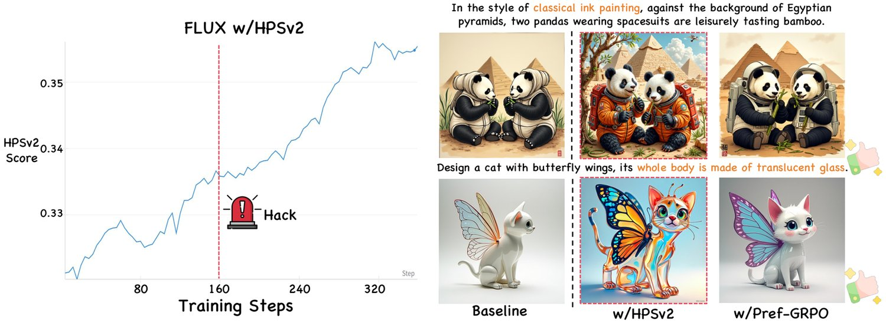
图 9：HPSv2 下的奖励破解。HPSv2 分数持续上升，但图像质量在第 160 步附近崩溃，表现为严重的过饱和。
We analyze reward hacking under two representative pointwise reward models, UnifiedReward [8] and HPSv2 [9]. For UnifiedReward, Fig. 2 shows that reward scores rise rapidly during training, yet the generated images gradually drift toward an unnatural dark style and perceptual quality degrades. For HPSv2, the same failure mode emerges even more abruptly in Fig. 9: the reward keeps rising, while image quality starts to collapse at around step 160, accompanied by severe over-saturation. Taken together, these results reveal a consistent mismatch between reward growth and real generation quality under reward score maximization.
我们在两个代表性的逐点奖励模型 UnifiedReward [8] 与 HPSv2 [9] 下分析奖励破解。对 UnifiedReward，图 2 显示训练过程中奖励分数快速上升，而生成图像逐渐偏向不自然的暗色风格，感知质量退化。对 HPSv2，图 9 中的同一失效模式出现得更为突兀：奖励持续上升，而图像质量在第 160 步左右开始崩溃，并伴随严重的过饱和。综合来看，这些结果揭示出在奖励分数最大化下，奖励增长与真实生成质量之间存在一贯的错配。
This mismatch is consistent with the illusory advantage analysis in Sec. IV-B. Once pointwise reward scores within a rollout group become highly compressed, GRPO amplifies tiny score gaps into large normalized advantages, causing the policy to over-optimize for spurious reward cues rather than genuine improvements in alignment or aesthetics. HPSv2 exhibits reward hacking earlier than UnifiedReward, consistent with its smaller intra-group score variance in Fig. Pref-GRPO: Pairwise Preference Reward-based GRPO for Stable Text-to-Image Reinforcement Learning(a), which intensifies the amplification effect. By contrast, Pref-GRPO optimizes relative preferences rather than absolute-score increments, leading to substantially more stable training behavior.
这一错配与第 IV-B 节的虚假优势分析相符。一旦一次回放组内的逐点奖励分数高度压缩，GRPO 就会把微小的分数差距放大为巨大的归一化优势，使策略针对虚假的奖励线索而非对齐或美学上的真实改进过度优化。HPSv2 比 UnifiedReward 更早出现奖励破解，这与它在图 1(a) 中更小的组内分数方差一致——该特性加剧了放大效应。相比之下，Pref-GRPO 优化的是相对偏好而非绝对分数增量，因而训练行为明显更稳定。
Several complementary observations support this mitigation. First, Fig. Pref-GRPO: Pairwise Preference Reward-based GRPO for Stable Text-to-Image Reinforcement Learning(a) shows that Pref-GRPO maintains a larger intra-group reward variance, directly suppressing the illusory-advantage amplification mechanism. Second, Figs. 2 and 9 show that, unlike pointwise-score GRPO, Pref-GRPO does not drift toward visually degraded solutions during prolonged training. Third, the qualitative comparison in Fig. 8 shows that Pref-GRPO preserves the original FLUX.1-dev visual style and does not collapse to reward-hacked artifacts. Finally, as we show next in Sec. VII-B, a controlled point-score-derived win-rate variant further confirms that replacing absolute-score maximization with a relative-comparison objective is itself the key stabilizing factor.
若干互补观察支持这一缓解效果。第一，图 1(a) 显示 Pref-GRPO 保持了更大的组内奖励方差，直接抑制了虚假优势的放大机制。第二，图 2 与图 9 显示，与逐点分数 GRPO 不同，Pref-GRPO 在长时间训练中并未漂移到视觉退化的解。第三，图 8 的定性比较显示，Pref-GRPO 保持了 FLUX.1-dev 原有的视觉风格，没有坍缩为被奖励破解的伪影。最后，正如我们接下来在第 VII-B 节所示，一个受控的、由逐点分数导出的胜率变体进一步证实：用相对比较目标取代绝对分数最大化，本身就是关键的稳定因素。
To disentangle the effect of the optimization objective from that of the reward model itself, we introduce a controlled variant based on point score-derived win rates. Specifically, we first compute UnifiedReward scores for all images in a rollout group, then convert these scores into pairwise win rates by comparing every image pair, and finally use the resulting win rates as rewards for training. This keeps the underlying reward model unchanged while replacing reward score maximization with a relative-comparison objective.
为把优化目标的作用与奖励模型本身的作用区分开来，我们引入了一个基于逐点分数导出胜率的受控变体。具体地，我们先为一次回放组中的全部图像计算 UnifiedReward 分数，再通过逐对比较把这些分数转换为成对胜率，最后用所得胜率作为奖励进行训练。这保持了底层奖励模型不变，同时把奖励分数最大化替换为相对比较目标。
This ablation isolates the source of the stability gain. If the improvement of Pref-GRPO came solely from using a stronger pairwise reward model, then converting UnifiedReward scores into win rates should offer little benefit. However, Fig. 10 shows the opposite: once the optimization target is changed from reward score maximization to win-rate fitting, the dark-style reward hacking observed under UnifiedReward is already substantially alleviated. Quantitative results in Tab. VIII further confirm this trend: training with point-score-derived win rates consistently outperforms reward score maximization, and Pref-GRPO, which uses native pairwise preference rewards, achieves the best overall performance.
该消融实验分离出了稳定性增益的来源。若 Pref-GRPO 的改进仅来自使用了更强的成对奖励模型，那么把 UnifiedReward 分数转换为胜率应当几乎不带来收益。然而图 10 显示了相反的结果：一旦优化目标从奖励分数最大化改为胜率拟合，UnifiedReward 下观察到的暗色风格奖励破解就已大幅缓解。表 VIII 的定量结果进一步印证了这一趋势：用逐点分数导出的胜率做训练，持续优于奖励分数最大化；而使用原生成对偏好奖励的 Pref-GRPO 取得最佳整体性能。
These results support two conclusions. First, a significant part of the instability in prior GRPO methods arises from the objective formulation, not merely from imperfections in the reward model. Second, pairwise preference rewards outperform score-derived win rates, indicating that native pairwise supervision provides cleaner and more faithful relative signals than rankings derived from compressed pointwise scores. In short, Pref-GRPO benefits from both components: relative-preference optimization is the key stabilizing factor, strengthened further by a dedicated pairwise reward model. A practical corollary is that practitioners with only scalar rewards can adopt win-rate fitting as a drop-in stability improvement.
这些结果支持两点结论。第一，此前 GRPO 方法中的不稳定，很大一部分源自目标的形式，而不只是奖励模型的不完善。第二，成对偏好奖励优于由分数导出的胜率，说明原生的成对监督比从被压缩的逐点分数推导出的排序提供更干净、更忠实的相对信号。简言之，Pref-GRPO 同时受益于两个组成部分：相对偏好优化是关键的稳定因素，专用的成对奖励模型则进一步强化了它。一个实用的推论是：只有标量奖励的从业者可以采用胜率拟合，作为一种直接替换的稳定性改进手段。
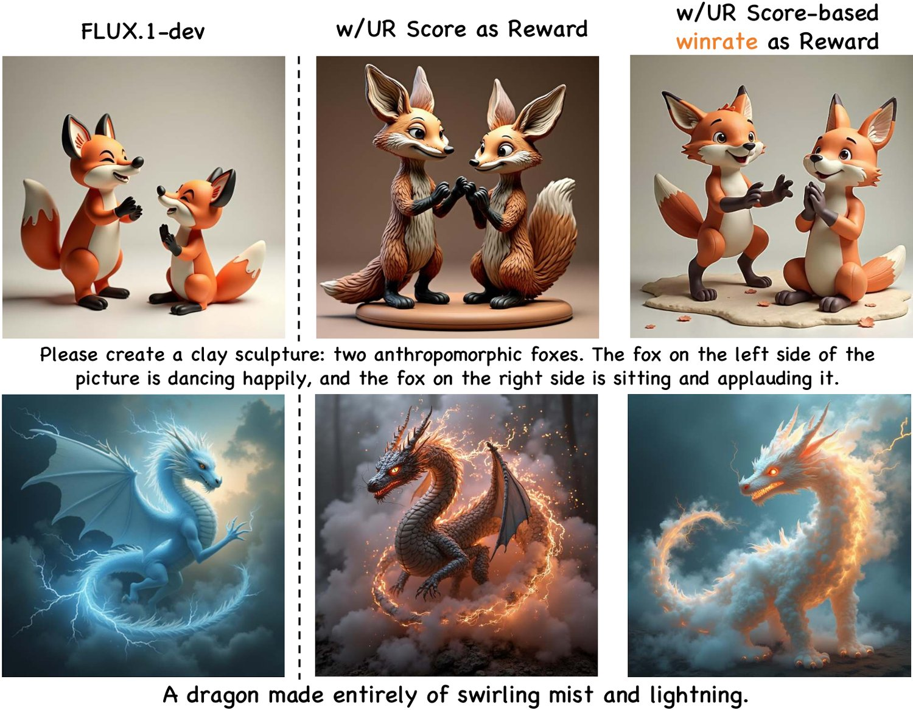
图 10：逐点分数导出的胜率训练缓解了奖励破解。把 UnifiedReward 分数转换为成对胜率，显著减轻了直接分数最大化下观察到的暗色风格漂移，支持“相对偏好（而非奖励模型本身）是关键稳定因素”这一结论。
表 VIII：逐点分数导出胜率与成对偏好胜率的比较。相对直接分数最大化（“w/ UR (score)”），把 UnifiedReward 分数转换为成对胜率（“w/ UR (score win rate)”）已提升稳定性；Pref-GRPO 进一步受益于原生的成对偏好奖励。最佳结果加粗，次优加下划线。
| Model | UniGen | GenEval | Unified Reward | Pick Score | Image Reward | Aes. |
| FLUX.1-dev | 61.30 | 62.92 | 3.04 | 22.42 | 1.27 | 6.13 |
| w/ UR (score) | 63.62 | 67.28 | 3.14 | 22.88 | 1.38 | 6.31 |
| w/ UR (score winrate) | 64.32 | 68.13 | 3.20 | 22.91 | 1.39 | 6.35 |
| w/ Pref-GRPO | 69.46 | 70.53 | 3.26 | 23.02 | 1.44 | 6.52 |
Although pairwise rewards require comparisons within each rollout group of size , the practical question is whether this additional computation becomes a prohibitive bottleneck during training. To answer this, we measure wall-clock reward computation time when training FLUX.1-dev on H800 GPUs, with the reward inference service deployed on another 4 H800 GPUs via vLLM [31]; this isolates per-step cost from the multi-node overhead of the 64-GPU main setup. We compare two settings across different group sizes: (i) point-score rewards from UnifiedReward, and (ii) pairwise preference win-rate rewards used in Pref-GRPO.
尽管成对奖励在每个回放组内需要 次比较（组规模为 ），实际问题是这些额外计算在训练中是否会成为难以承受的瓶颈。为回答这一点，我们测量了在 张 H800 GPU 上训练 FLUX.1-dev 时的奖励计算时钟时间，奖励推理服务通过 vLLM [31] 部署在另外 4 张 H800 GPU 上；这样可以把每步开销与 64 GPU 主配置的多节点开销分离。我们比较了不同组规模下的两种设置：(i) 由 UnifiedReward 给出的逐点分数奖励；(ii) Pref-GRPO 使用的成对偏好胜率奖励。
表 IX：每训练步的奖励计算时钟时间。“Requests/step”统计每种方案在一步训练中调用的奖励模型前向计算次数。
| Reward type | Rollouts / group | Requests / step | Time / step |
| Point score (UnifiedReward) | 8 | 32 | 3 s |
| 16 | 64 | 5 s | |
| Pairwise winrate (Ours) | 8 | 112 | 7 s |
| 12 | 264 | 14 s | |
| 16 | 480 | 22 s |
Tab. IX shows that the added cost is moderate. Under the default setting , pairwise win-rate rewards increase the per-step reward time from 3 s to 7 s, an additional 4 s of overhead. At , the number of reward-model requests grows from 64 to 480 (), yet wall-clock reward time grows only from 5 s to 22 s (), far sublinear in the number of pairwise comparisons. Pairwise supervision is therefore effectively amortized by parallel reward serving.
表 IX 显示，额外开销适中。在默认设置 下，成对胜率奖励把每步奖励时间从 3 秒增至 7 秒，即多出 4 秒开销。在 下，奖励模型请求数从 64 增至 480（），而奖励计算的时钟时间仅从 5 秒增至 22 秒（），远低于与两两比较次数成正比的线性增长。因此成对监督的开销被并行的奖励服务有效地摊还了。
The main concern with pairwise rewards is theoretical complexity, not practical infeasibility. In our setting, already yields strong empirical gains (Tab. III, Figs. 2, 8), so the added reward latency remains modest relative to the training benefit. Overall, Pref-GRPO achieves a favorable computation–performance trade-off: substantially improved generation quality and mitigated reward hacking, with only limited wall-clock overhead.
成对奖励的主要顾虑是理论复杂度，而非实际不可行。在我们的设置中， 已带来显著的实证增益（表 III、图 2、图 8），因此相对训练收益而言，额外的奖励延迟仍然有限。总的来看，Pref-GRPO 取得了良好的计算—性能权衡：生成质量大幅提升、奖励破解得到缓解，而时钟开销仅有小幅增加。
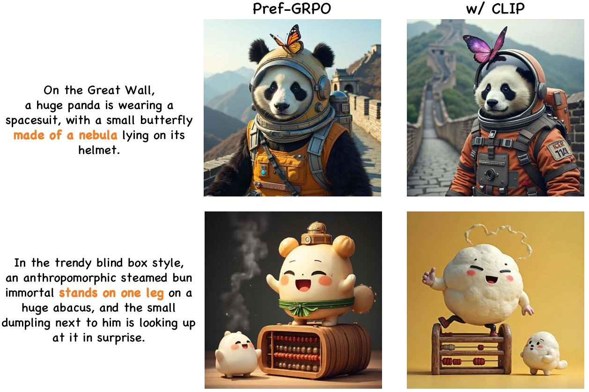
图 11：Pref-GRPO 与 CLIP 分数奖励的联合优化。加入 CLIP 提升了语义一致性，同时略微降低感知质量，但不触发奖励破解。成对偏好拟合对辅助分数信号起到了稳定正则项的作用。
表 X：Pref-GRPO 与基于 CLIP 的奖励分数最大化的联合优化。最佳结果加粗。
| Model | UniGen | GenEval | Unified Reward | Pick Score | Image Reward | Aes. |
| Pref-GRPO | 69.46 | 70.53 | 3.26 | 23.02 | 1.44 | 6.52 |
| w/ CLIP | 70.02 | 71.26 | 3.18 | 22.86 | 1.41 | 6.44 |
To examine whether score-based rewards can still provide useful auxiliary supervision, we add a CLIP [12] reward on top of Pref-GRPO and perform joint optimization. Here CLIP serves as a score-based reward signal that focuses more on semantic consistency between the prompt and the generated image. This experiment tests whether pairwise preference fitting can serve as a stabilizing objective while score-based rewards provide complementary semantic guidance.
为检验基于分数的奖励是否仍能提供有用的辅助监督，我们在 Pref-GRPO 之上加入一个 CLIP [12] 奖励并做联合优化。此处 CLIP 充当基于分数的奖励信号，更关注提示词与生成图像之间的语义一致性。该实验检验成对偏好拟合能否作为稳定目标，而基于分数的奖励提供互补的语义引导。
As shown in Tab. X, joint optimization improves semantic consistency on UniGenBench and GenEval, but slightly reduces image-quality-oriented metrics relative to vanilla Pref-GRPO. The qualitative results in Fig. 11 show the same trade-off: semantics improve, while perceptual quality drops mildly. Importantly, unlike pure score maximization, this setting does not exhibit obvious reward hacking. This suggests that pairwise preference fitting acts as a stabilizing regularizer in joint optimization, making it possible to incorporate auxiliary score rewards without collapsing to reward-hacked solutions.
如表 X 所示，联合优化提升了 UniGenBench 与 GenEval 上的语义一致性，但相对原始 Pref-GRPO 略微降低了面向图像质量的指标。图 11 的定性结果呈现同样的权衡：语义改善，而感知质量略有下降。重要的是，与纯分数最大化不同，该设置并未出现明显的奖励破解。这说明成对偏好拟合在联合优化中充当了稳定正则项，使得纳入辅助分数奖励而不坍缩为被奖励破解的解成为可能。
To test robustness to imperfect preference supervision, we inject synthetic noise into the pairwise reward during training by independently flipping each pairwise outcome with probability , roughly matching typical human-disagreement rates on image preferences.
为检验对不完美偏好监督的鲁棒性，我们在训练中向成对奖励注入合成噪声：以概率 独立翻转每一个成对比较的结果，该概率大致对应图像偏好上典型的人类分歧率。
As shown in Tab. XI, Pref-GRPO remains strong under noisy preferences and consistently outperforms all point score-based baselines. Although the injected noise causes a small drop relative to the clean Pref-GRPO model, the degradation is limited across all metrics. This result suggests that pairwise preference optimization remains robust under moderate label corruption, which is important in practical settings where preference annotations are often noisy, inconsistent, or partially unreliable.
如表 XI 所示，Pref-GRPO 在带噪偏好下依然强劲，持续优于所有基于逐点分数的基线。尽管注入的噪声使其相对干净的 Pref-GRPO 模型有小幅下降，但在所有指标上的退化都很有限。这一结果表明，成对偏好优化在中等程度的标签损坏下仍保持鲁棒——在实际场景中，偏好标注常常带噪、不一致或部分不可靠，这一点尤为重要。
表 XI：Pref-GRPO 在 10% 偏好噪声下的鲁棒性。带噪变体在训练中以概率 翻转每个成对偏好结果。
| Method | UniGen | T2I- Comp | GenEval | Unified Reward | Pick Score |
| FLUX.1.dev | 61.30 | 48.17 | 62.92 | 3.04 | 22.42 |
| w/ HPSv2+CLIP | 58.77 | 46.77 | 59.31 | 3.09 | 22.62 |
| w/ UnifiedReward | 63.62 | 50.20 | 67.28 | 3.14 | 22.88 |
| w/ Pref-GRPO (10% noise) | 67.92 | 51.03 | 70.12 | 3.22 | 22.90 |
| w/ Pref-GRPO (Ours) | 69.46 | 51.85 | 70.53 | 3.26 | 23.02 |
To verify the reliability of the automatic judge used in UniGenBench, we conduct a testpoint-level agreement study between Gemini-2.5-Pro [14] and human annotators. We sample 400 held-out prompt-image-testpoint triplets from benchmark predictions generated by models of varying strengths, with 40 triplets for each of the 10 primary dimensions. Each triplet contains a prompt, a generated image, and one explicit testpoint description. Five annotators independently judge whether the image satisfies the specified testpoint using the same binary protocol as in benchmark evaluation, and the human majority vote is taken as the reference label.
为验证 UniGenBench 所用自动评判器的可靠性，我们开展了一项 Gemini-2.5-Pro [14] 与人类标注者在测试点级别的一致性研究。我们从不同强度模型的基准预测结果中采样 400 条留出的“提示词—图像—测试点”三元组，10 个主维度各 40 条。每个三元组包含一条提示词、一幅生成图像和一条明确的测试点描述。五名标注者依据与基准评测相同的二值规则，独立判断该图像是否满足指定测试点，并以人类多数投票作为参考标签。
We report inter-annotator agreement, Gemini-vs.-human-majority accuracy, macro-F1, and Cohen’s in Tab. XII. These metrics provide complementary views of evaluator reliability: inter-annotator agreement reflects the intrinsic ambiguity of each dimension and serves as a practical human reference ceiling, Gemini-vs.-human-majority accuracy measures direct agreement with human judgment, macro-F1 prevents class imbalance from dominating the result, and discounts agreement that may occur by chance. Gemini-2.5-Pro achieves strong overall consistency with human judgments. Agreement is highest on more direct dimensions such as Style, Attribute, and Layout, while more abstract dimensions such as Relationship, Compound, and Logical Reasoning remain relatively more challenging. This tracking behavior supports Gemini-2.5-Pro’s use as the UniGenBench evaluator.
我们在表 XII 中上报标注者间一致性、Gemini 对人类多数投票的准确率、macro-F1 以及 Cohen's 。这些指标从互补角度刻画评测器的可靠性：标注者间一致性反映各维度的固有歧义，可视为实用的人类参考上限；Gemini 对人类多数投票的准确率衡量与人类判断的直接一致程度；macro-F1 防止类别不平衡主导结果；而 则剔除了偶然达成的一致。Gemini-2.5-Pro 与人类判断整体上高度一致。一致性在 Style、Attribute、Layout 等更直接的维度上最高，而 Relationship、Compound、Logical Reasoning 等更抽象的维度仍相对更具挑战。这种跟踪表现支持将 Gemini-2.5-Pro 用作 UniGenBench 的评测器。
表 XII：Gemini-2.5-Pro 作为 UniGenBench 评测器的人工验证。我们逐主维度上报 Inter-Ann. Agr.、Gemini 对人类多数投票的 Acc.、Macro-F1 与 Cohen's 。
| Dimension | Inter-Ann. Agr. | Acc. | Macro- F1 | |
| Overall | 0.92 | 0.83 | 0.82 | 0.66 |
| Style | 0.96 | 0.90 | 0.89 | 0.76 |
| World Know. | 0.91 | 0.82 | 0.81 | 0.64 |
| Attribute | 0.93 | 0.84 | 0.83 | 0.67 |
| Action | 0.91 | 0.82 | 0.81 | 0.64 |
| Relationship | 0.89 | 0.80 | 0.79 | 0.60 |
| Compound | 0.88 | 0.79 | 0.78 | 0.58 |
| Grammar | 0.86 | 0.81 | 0.77 | 0.60 |
| Layout | 0.92 | 0.83 | 0.82 | 0.66 |
| Logical Reason. | 0.85 | 0.79 | 0.77 | 0.60 |
| Text | 0.88 | 0.84 | 0.83 | 0.66 |
This paper addresses two limitations in current T2I research: unstable GRPO optimization under pointwise reward score maximization, and the lack of fine-grained benchmarks for diagnosing semantic consistency. To this end, we propose Pref-GRPO, which replaces absolute score maximization with pairwise preference fitting, and UniGenBench, which evaluates semantic consistency through fine-grained testpoints spanning diverse prompt themes and evaluation dimensions. Extensive experiments show that Pref-GRPO yields more stable training, alleviates reward hacking, and achieves consistently stronger semantic consistency on both in-domain and out-of-domain benchmarks. Besides, UniGenBench reveals where strong T2I models still fail, especially on more demanding dimensions such as relationship understanding, compositional instruction following, logical reasoning, and text rendering. We hope these two contributions together provide a more reliable training objective and a more informative evaluation protocol for future T2I reinforcement learning research.
本文针对当前 T2I 研究中的两处局限：逐点奖励分数最大化下 GRPO 优化的不稳定，以及缺乏用于诊断语义一致性的细粒度基准。为此，我们提出 Pref-GRPO——用成对偏好拟合取代绝对分数最大化，以及 UniGenBench——通过覆盖多样提示词主题与评测维度的细粒度测试点来评估语义一致性。大量实验表明，Pref-GRPO 带来更稳定的训练，缓解奖励破解，并在域内与域外基准上持续取得更强的语义一致性。此外，UniGenBench 揭示了强 T2I 模型仍在何处失败，尤其是在关系理解、组合式指令遵循、逻辑推理与文本渲染等要求更高的维度上。我们希望这两项贡献共同为未来的 T2I 强化学习研究提供更可靠的训练目标与更具信息量的评测协议。